freiesMagazin März 2008
Topthemen dieser Ausgabe
Samsung-Druckertreiber im Test
Die Funktionalität von Hardware unter Linux steht und fällt vor allem mit den Treibern. Sehr oft stellen Hardwarehersteller nur Windows-Treiber zur Verfügung. Samsung ist hier eine Ausnahme, da sie selbst proprietäre Treiber anbieten. Daneben gibt es aber auch noch andere freie Treiberprojekte. Der Artikel erklärt die Installation der Treiber und vergleicht sie miteinander. (weiterlesen)
C.U.O.N. im täglichen Büroeinsatz
Das C.U.O.N.-System sowie der Client pyCuon sind Auftragsbearbeitung, Warenwirtschaft und allgemeine Datenverwaltung in einem. Außerdem beinhaltet C.U.O.N. ein Document Management System (DMS). Linux ist reif für den Desktop und dieser Bericht soll die Möglichkeiten dazu aufzeigen. (weiterlesen)
Fernsehen übers Internet mit Zattoo
Fernsehen auf dem PC ist schon lange keine Besonderheit mehr. Normalerweise wird aber zusätzliche Hardware benötigt, um den Kabelanschluss oder DVB-T nutzen zu können, es sei denn, man greift auf die Streaming-Angebote der Sender oder auf Sendungsarchive zurück. Der Nachteil besteht darin, dass Sendungen erst nach dem regulären Sendetermin abgerufen werden können. Mit dem TV-Player Zattoo ist es möglich, werbefinanziert das Programm ausgewählter Sender ,,live'' über das Internet anzuschauen. (weiterlesen)
Zum Index
Inhalt
Nachrichten
Distributionen aktuell
Neues aus der Welt der Mobilgeräte
Zweite Version von Linutop auf dem Markt
Kernel Bug #9924
Ab in die Gruft!
Neues Projekt zur Förderung der Barrierefreiheit gestartet
Video-Wettbewerb des EU-Projekts ,,Self''
Vorbereitungen für Googles ,,Summer of Code'' laufen
Wird OOXML doch ein ISO-Standard?
Into the Sun, Teil 2
AMDs Performance Library unter freier Lizenz veröffentlicht
Anleitungen
Mehrkern-Prozessoren mit make ausnutzen
Bildschirm mit einem Klick ausschalten
Samsung-Druckertreiber im Test
Software
C.U.O.N. im täglichen Büroeinsatz
Fernsehen übers Internet mit Zattoo
Multimediatastaturen mit xbindkeys zähmen
Linux allgemein
Paketverwaltung – von APT und RPM
Webzwonull plus GPL: die AGPL
Rezension: Freie Software
2008 ist das Jahr des Linux-Desktops
Veranstaltungen
Interna
Editorial
Leserbriefe
Konventionen
Vorschau
Impressum
Soweit nicht anders angegeben, stehen alle Artikel und Beiträge in freiesMagazin unter der GNU-Lizenz für freie Dokumentation (FDL). Das Copyright liegt beim jeweiligen Autor. freiesMagazin unterliegt als Gesamtwerk ebenso der GNU-Lizenz für freie Dokumentation (FDL) mit Ausnahme von Beiträgen, die unter einer anderen Lizenz hierin veröffentlicht werden. Das Copyright liegt bei Eva Drud. Es wird die Erlaubnis gewährt, das Werk/die Werke (ohne unveränderliche Abschnitte, ohne vordere und ohne hintere Umschlagtexte) unter den Bestimmungen der GNU Free Documentation License, Version 1.2 oder jeder späteren Version, veröffentlicht von der Free Software Foundation, zu kopieren, zu verteilen und/oder zu modifizieren. Die xkcd-Comics stehen separat unter der Creative Commons-Lizenz CC-BY-NC. Das Copyright liegt bei Randall Munroe.
Zum Index
Editorial
Liebe Leserin, lieber Leser! Lassen Sie die Korken knallen, denn diesen Monat haben wir ein kleines Jubiläum zu feiern! freiesMagazin ist zwei Jahre alt geworden. Rückblickend hat sich viel verändert - sowohl am Layout als auch beim Inhalt. Bei einem direkten Vergleich mit der ersten Ausgabe von Februar/März 2006 erkennt man freiesMagazin kaum wieder. Im zweiten Erscheinungsjahr sind viele kleine Änderungen eingeflossen, die uns vor allem intern die Arbeit sehr erleichtert haben (siehe LATEX-Quellcode (Link)). Darüber hinaus hatten wir uns Ende des Jahres 2007 entschlossen, etwas weltoffener zu werden und das Magazin nicht mehr so sehr auf Ubuntu auszurichten. Neben den offensichtlichen Änderungen am Magazin selbst hat sich auch die Zusammensetzung des Teams verändert. Aus einem einzigen Korrektor sind inzwischen drei geworden, die Redaktion hat ein Mitglied gewonnen und eines verloren und es wurde ein extra Server-Team gegründet. Die Downloadzahlen von freiesMagazin sind im Laufe des letzten Jahres leicht gestiegen, einzig der Umzug auf einen eigenen Server im September 2007 sorgte mit seinem anfänglichen Ausfall für einen kleineren Einbruch. Gleichzeitig haben wir uns den Wunsch einer eigenen Internetpräsenz erfüllt, sodass man alle Nachrichten und Ankündigungen zum Magazin sowie einige Extras wie Link-Buttons auf der Webseite http://www.freiesmagazin.de (Link) findet. Daher freuen wir uns auch besonders über die Neuigkeit, dass wir ab sofort mit zwei anderen Open-Source-Projekten zusammenarbeiten. Zum einen wurde die Januar-Ausgabe von freiesMagazin (Link) auf die beiliegende CD des Print-Magazins T3N (Link) gepresst, welches seit dem 29. Februar im gut sortierten Zeitschriftenhandel zu finden ist. Zum anderen wollen wir in Zukunft mehr mit dem Team von Pro-Linux (Link) kooperieren. Viele unserer Nachrichten basieren bereits auf Meldungen des Internetportals, wir tauschen nun aber auch Artikel aus, sodass ab und an freiesMagazin-Artikel bei Pro-Linux erscheinen und umgekehrt Pro-Linux-Artikel in freiesMagazin abgedruckt werden. 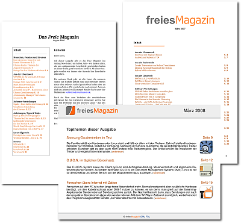
freiesMagazin im Wandel der Zeit.
Wir hatten letzten Monat (Link) auf die geringen Downloadzahlen der Mobilausgabe hingewiesen und dies auf die fehlenden Bilder in der Version zurückgeführt. Zum einen waren die Downloadzahlen anscheinend gar nicht so niedrig, wie angenommen - unser Server hatte nur ein kleines Problem mit den Logdateien. Zum anderen haben uns die aktuellen Zahlen aber dennoch gezeigt, dass die HTML-Version mit Bildern mit über 20.000 Downloads sehr beliebt ist. Darüber freuen wir uns natürlich sehr und haben diesen Monat als kleine Ergänzung die einzelnen Artikel zur besseren Abgrenzung mit einer extra Linie versehen und einen Link zurück zum Inhaltsverzeichnis eingefügt. So sollte die Navigation im Mobilgerät noch etwas komfortabler ablaufen. Zusätzlich haben wir eine separate mobile Übersichtsseite http://www.freiesmagazin.de/mobil/ (Link) eingerichtet, über die man auch die alten Mobilausgaben leicht erreichen kann. Auch in dieser Ausgabe haben wir an unserem Layout gefeilt, wie Sie sicher sehen werden. Am Auffälligsten sind die neu eingeführten Unterkategorien oben rechts. Dies soll leichter erkennbar machen, worum es in einem Artikel geht. Eine auf den ersten Blick nicht sichtbare, aber nützliche Änderung haben wir bei der Schriftart, die in den Befehls- und Textboxen verwendet wird, vorgenommen: Die Befehle lassen sich nun ohne Fehler per Maus markieren und direkt in ein Terminal einfügen. Zum Abschluss möchten wir wieder etwas von Ihnen wissen: Welches Verhältnis zwischen Nachrichten und Artikeln wünschen Sie sich in freiesMagazin? Sind die Nachrichten in freiesMagazin überhaupt noch interessant oder schon längst ,,kalter Kaffee''? Dabei wollen wir vor allem auf Zusammenfassungen wie die Distributionsübersicht dort (Link) hinweisen, die einen Überblick über die Veränderungen im letzten Monat geben. Schreiben Sie uns doch Ihre Meinung per E-Mail an
| D. Wagenführ | E. Drud |
http://www.freiesmagazin.de/extras
http://www.freiesmagazin.de
ftp://ftp.freiesmagazin.de/2008/freiesMagazin-2008-01.pdf
http://t3n.yeebase.com/
http://www.pro-linux.de
ftp://ftp.freiesmagazin.de/2008/freiesMagazin-2008-02.pdf
http://www.freiesmagazin.de/mobil/
Zum Index
Leserbriefe
Für Leserbriefe steht unsere E-Mailadresse
An dieser Stelle möchten wir alle Leser ausdrücklich ermuntern, uns auch zu schreiben, was nicht so gut gefällt. Wir bekommen sehr viel Lob (was uns natürlich freut), aber nur durch Kritik können wir uns verbessern.
Mobile Ausgabe
Ich habe eine Anregung zur mobilen freiesMagazin-Ausgabe: Die Version ohne Bilder war bei mir 50 KB groß - das ist zwar noch akzeptabel, für andere aber vielleicht schon zu groß. Außerdem dürfte es für Nutzer mit normalen Handys ziemlich schwierig sein, sich zurechtzufinden. Gerade, wenn man nicht alles lesen möchte, sondern sich nur Teile herauspickt, ist das etwas problematisch.
Daher schlage ich vor, dass die eine große Datei in mehrere aufgespalten wird. Idealerweise würde die Startseite nur aus einem Inhaltsverzeichnis bestehen. Eventuell wäre ein einleitender Satz zu den längeren Artikeln, z. B. den Anleitungen, hilfreich, aber unbedingt nötig wäre das nicht. So könnte man sich genau das heraussuchen, was man lesen möchte. Und mit einem Tastendruck auf ,,Zurück'' ist man wieder im Inhaltsverzeichnis und kann sich dem nächsten Artikel widmen.
Dominic Lyons freiesMagazin: Vielen Dank für die Anregung. Eine Aufsplittung in mehrere HTML-Seiten ist ein sehr großer Aufwand. Zur besseren Navigation und optischen Trennung haben wir aber jeden Artikel durch eine Linie getrennt und einen Link zum Inhaltsverzeichnis unter jedem Beitrag hinzugefügt. Veranstaltungen
Ich möchte mich erstmal für Eure interessanten Beiträge in freiesMagazin bedanken. Durch Zufall fand ich den Link beim Surfen in einem Forum. Leider habe ich erst heute entdeckt, dass Ihr auch Veranstaltungen bekannt gebt. So möchte ich die Möglichkeit nutzen und die Linux-Gruppe von Eisenach und Umgebung kurz vorstellen.
Thomas Warlich Ich möchte auf unseren Linux-User-Group-Treff der LUG Kreuzlingen (CH) aufmerksam machen. Auf freiesMagazin wird bei uns jedes Mal hingewiesen. Eine tolle Sache. Ich persönlich begrüße die Öffnung zu anderen Distris, auch wenn ich K/Ubuntuuser bin. Weiter so!
Esra Kummer freiesMagazin: Vielen Dank für das Lob und für die Mitteilung der beiden Anwendertreffen. Wir freuen uns über jede neue Veranstaltung, die wir in unserer Liste dort (Link) veröffentlichen können, auch wenn sie diesen Monat leider ausgefallen ist. Wenn Sie also ein Treffen kennen, das wir noch nicht aufführen, schreiben Sie einfach eine Mail an . Titelseite
Bitte nicht böse sein, aber welche Titelseite sprecht Ihr im Editorial an? Bei aller Liebe, aber eine Titelseite muss schon etwas mehr bieten! Wenn ich könnte, würde ich etwas beitragen (guckt Euch mal gängige Titelseiten diverser Print-Magazine oder Eures ,,Mitbewerbers'' Yalm an), aber da ich es nicht kann, beschränke ich mich aufs Kritisieren.
Dirk Sohler freiesMagazin: Unsere Titelseite ist bewusst sehr schlicht gestaltet. Einerseits soll sie zu unserem schlichten und klaren Layout passen, andererseits müssen wir im Gegensatz zu Print-Magazinen keinen Blickfang im Regal liefern, damit jemand freiesMagazin kauft. Titelseiten wie bei Yalm oder Full Circle Magazine würden einfach nicht zu unserem Stil passen. Trotzdem heißt das nicht, dass unsere Titelseite für alle Zeiten so bleiben wird. Wie bisher werden wir sicher auch die Titelseite immer wieder kleinen Änderungen unterwerfen - irgendwann vielleicht einmal so, dass auch Sie sie als Titelseite definieren würden. Zur Titelseite in der PDF-Version: Es dürften ruhig auch drei Artikel genannt werden. Das fände ich irgendwie ästhetischer, aber es kann natürlich sein, dass es Euch anders geht. :-)
Dominic Lyons freiesMagazin: Wir versuchen immer drei Artikel als Topthema aufzulisten, aber letzten Monat war einfach kein dritter dabei. Wir haben intern festgelegt, dass wir auf der ersten Seite wirklich nur wichtige und ,,große'' Titel stehen haben möchten. Qualität vor Quantität! Nachwort zu Venezuela
Nur noch ein kurzes Nachwort zu den beiden Leserbriefen bzgl. der ,,Diktatur des Hugo Chavez''. Die ,,zwangsweise dichtgemachte TV-Anstalt'' darf auch weiterhin über Satellit und Kabelfernsehen senden, nur nicht als staatlicher Kanal. Gründe dafür gibt es genug, da reicht schon ein Blick in Wikipedia in die Beschreibung des Senders RCTV (Link). Alternativ bei ein wenig Zeit kann man sich natürlich auch noch Quellen abseits der Tagesschau (die damals genauso reißerisch berichtete) zu Gemüte führen (Link).
Ansonsten viel Erfolg weiterhin bei freiesMagazin!
Alexander Reelsen freiesMagazin: Vielen Dank für den Leserbrief. Das wird einige unserer Leser sicher interessieren. Mein Artikel über Freie Software in Venezuela hat ja einigen Wirbel verursacht - die Leserbriefe zu diesem Text möchte ich an dieser Stelle jedoch nicht kommentieren. Sehr verwundert hat mich Eure Reaktion darauf in der Februar-Ausgabe: ,,Danke für Ihre beiden Reaktionen. Wie Sie sehen, polarisiert das Thema und wir können es wahrscheinlich nicht allen Lesern recht machen. Wie wir letzten Monat schrieben, wollen wir Themen, zu denen uns eine einseitige politische Berichterstattung vorgeworfen werden könnte, nicht mehr aufgreifen. Dies hat aber nicht zwingend etwas mit Nichtbeachtung oder Zensur zu tun. freiesMagazin beschäftigt sich mit Themen rund um Linux und Open Source. Politische Artikel haben hier keinen Platz.''
Nach meinem Verständnis ist Freie Software - und die Werte, die sie transportiert - per se politisch und daher ist es auch gar nicht möglich über Freie Software zu schreiben ohne auch über Politik zu schreiben.
Natürlich ist freiesMagazin nicht die junge (GNU/Linux) Welt und auch nicht die taz oder Indymedia und wenn die gesellschaftliche Dimension von Freier Software für Euch keine Relevanz besitzt, ist das auch ok, denn schließlich ist freiesMagazin ja Euer ,,Baby'' - ich fände eine solche Haltung einfach nur traurig...
Andreas Henrichs freiesMagazin: In unseren Augen gibt es Unterschiede zwischen Parteipolitik, Umweltpolitik und Open-Source-Politik, wenn man dies so nennen will. Der Venezuela-Artikel hat die Leser aufgerieben, weil die Parteipolitik für den ein oder anderen mit hinein spielte. Und auf diese wollen wir in Zukunft verzichten.
Unserer Meinung nach hat freiesMagazin nichts mit derartiger Politik zu tun. Und wir wollen mit unserem Magazin auch weder gegen die ,,bösen'', großen, proprietären Hersteller und Magazine kämpfen, noch ,,missionieren'', sondern einfach nur den Menschen eine Möglichkeit geben, sich über Open-Source- und Linux-Themen zu informieren. Wir finden es einfach sehr ermüdend, wenn es wegen bestimmter Themen böse Leserbriefe hagelt, und wir uns dafür rechtfertigen müssen. Es wäre auch uns lieber, wenn alle Leser den Artikel als Bericht und nicht als Wertung aufgefasst hätten. Wie Sie aber selbst gelesen haben, haben doch einige den Artikel als ,,Beweihräucherung'' der Politik von Chavez' gesehen.
Daher haben wir uns zu obiger Aussage entschlossen, an der wir auch festhalten werden. MOC'n'Roll: audiophil mit der Konsole (freiesMagazin 02/2008)
Ich hab Euer Magazin erst jetzt gerade durch Pro-Linux kennengelernt und bin recht begeistert. Insbesondere den Artikel ,,MOC'n'Roll: audiophil mit der Konsole'' habe ich mir gerade mal kurz durchgelesen, weil ich auch absoluter MOC-Fan bin. Dazu muss ich aber direkt mal einen kleinen Kritikpunkt loswerden. Die beiden mit Abstand wichtigsten Features habt Ihr nämlich leider vergessen zu nennen. MOC bringt den meiner Meinung nach besten Sound im Vergleich zu allen anderen Musik-Playern für Linux, die ich kenne. Das Ding klingt irgendwie noch viel besser als meine alte HiFi-Anlage.
Das zweite nicht erwähnte Feature ist der Songwechsel ohne Pause, für den man bei allen anderen Playern zusätzliche Plugins braucht oder an irgendwelchen Cache-Einstellungen herumbasteln muss, die dann doch nicht so wirklich gut funktionieren.
Aber ansonsten trifft es der Artikel auf den Punkt. Und das Interview mit Damian Pietras ist auch recht interessant.
Heiko Baums freiesMagazin: Vielen Dank für das Lob am Magazin. Es ist schön zu hören, dass sich die Arbeit lohnt. Wir haben den Leserbrief veröffentlicht, da die beiden Features sicher auch andere Leser interessieren. Vielen Dank für die Information. Links und Fehlerteufel
Ich habe Euer Magazin diesen Monat erst entdeckt und es hat mir im Ganzen sehr gut gefallen. Negativ fielen mir allerdings die Quellenverweise auf. Meiner Meinung nach stechen diese mit dem Blau zu sehr hervor, ich würde eher für die Verweise dieselbe Farbe wie für den übrigen Text verwenden.
Ein Fehler ist mir aufgefallen in der Rubrik ,,Veranstaltungskalender''. Der Eintritt für die Chemnitzer Linux-Tage ist nicht ganz umsonst sondern beträgt 5 bzw. 3 (ermäßigt) Euro.
Armin Eulenstein freiesMagazin: Wir haben überlegt, ob und wie wir die Links ändern können. Die gleiche Farbe wie bei den internen Verweisen zu benutzen, wäre aber nicht so gut, da wir bewusst Wert auf eine Differenzierung legen. Wir haben dafür in dieser Ausgabe das Blau etwas abgedunkelt.
Den Fehler bei den Veranstaltungen haben wir nachträglich ausgebessert. Vielen Dank für den Hinweis. Lob
Ich schau immer mal wieder auf der ubuntuusers-Seite vorbei, denn es ist eine der besten Quellen für ,,Wie kriege ich was hin?'' oder ,,Was gibt es für Software, die xyz kann?'', und schau dabei auch immer mal Euer freiesMagazin an. Und was soll ich sagen - ich find's einfach gut, speziell auch die Offenheit. :-) Selber kann ich gerade noch nicht mitmachen, aber vielleicht später. Mal schauen! Wollte einfach sagen: Ihr macht eine super Arbeit!
Thomas Stegmaier freiesMagazin: Vielen Dank für die motivierende Mail voller Lob! Wenn Sie Zeit zum Mitmachen haben, können Sie sich gerne bei uns melden. Wir freuen uns über jeden Artikel. Dabei auch gleich der Aufruf an alle anderen potentiellen Autoren, die ihre Beiträge und auch Ideen an
http://de.wikipedia.org/wiki/RCTV
http://politblog.net/nachrichten/2007/05/27/1027-wahrnehmungsmanagement-in-der-praxis-das-beispiel-venezuela/
Die Redaktion behält sich vor, Leserbriefe gegebenenfalls zu kürzen.
Zum Index
Distributionen aktuell
Es gab letzten Monat viele neue Versionen der verschiedensten Linux-Distributionen. Der Artikel soll die Neuigkeiten kurz zusammenfassen. CentOS
CentOS ist ein Enterprise-Linux, welches aus den GPL-Quellen von Red Hat Enterprise Linux (RHEL) ein neues System erstellt. Mit Hilfe der Live-CD-Tools des Fedora-Projektes haben die CentOS-Macher nun Version 5.1 ihrer Distribution auf eine Live-CD gebannt (Link). Darauf zu finden sind u. a. OpenOffice.org, Firefox und Thunderbird, aber auch für die Systemrettung wichtige Programme wie Samba, LVM und Raid-Unterstützung (Link). Darkstar Linux
Auf einer DVD kommt die finale Version 2008.1 von Darkstar Linux daher (Link). Das auf Slackware basierende Betriebssystem will sich vorrangig an Linux-Einsteiger wenden. Die DVD bringt KDE und Xfce als Fenstermanager sowie zahlreiche Programme mit. Einzig die Hardwareunterstützung scheint nicht immer so gut zu sein, wie dieser Bericht (Link) zeigt. Debian
Das Debian-Team hält an seinem Plan fest, nach dem Debian ,,Lenny'' im September 2008 erscheinen soll. Aktuell gibt es aber noch über 400 systemkritische Fehler, die ausgebessert werden müssen (Link).
Zusätzlich ist für Debian 4.0 ,,Etch'' das dritte Update erschienen, welches Sicherheitsupdates und Fehlerkorrekturen der letzten zwei Monate mitbringt. Daneben hat auch ein neuer Kernel für eine bessere Hardwareunterstützung Einzug in die Distribution gefunden. Wichtig für viele Anwender ist die Verschiebung von Adobe Flash in die Debian-Backports (Link).
Ende des Monats haben die Debian-Entwickler auch bekannt gegeben, dass die Unterstützung für Debian 3.1 ,,Sarge'' Ende März eingestellt wird. Es wird empfohlen, auf eine neuere Version zu aktualisieren (Link). Dreamlinux
Die auf Morphix aufbauende Distribution Dreamlinux hat Mitte Februar ihre dritte Beta-Version herausgegeben (Link). Der erste Release Candidate steht aber bereits in den Startlöchern, sodass die finale Version Ende März erscheinen soll. Als Fenstermanager kommen GNOME und Xfce auf der Live-CD zum Einsatz, die man beim CD-Start auswählen kann. Ein erster Test der Beta-Version liegt auch vor (Link). Fedora
Das Fedora-Projekt veröffentlichte die erste Alpha-Version von Fedora 9 mit KDE 4.0, GNOME 2.22 Beta und Firefox 3 Beta. Vor der Veröffentlichung im April sind noch eine Beta-Version und ein Release Candidate geplant (Link). Daneben wird für Fedora 8 nun auch ein Xfce-Spin als Live-CD neben GNOME und KDE angeboten (Link). Aber auch hinter den Kulissen gibt es etwas Neues. So plant man aktuell die Zusammenfassung der verschiedenen Fremdrepositories zu einer großen Quelle namens ,,RPM Fusion''. Zusätzlich gibt es von der Community Bestrebungen, mit der ,,Eeedora'' getauften Distribution Fedora auf den Asus EeePC zu bringen (Link). Gentoo
Nachdem es bei Gentoo letzten Monat einige Probleme gab (Link), hat sich das Projekt inzwischen reorganisiert. So wurden die notwendigen Dokumente eingereicht, damit die Stiftung wieder ihre Zulassung erhalten kann. Weiter hat sich das PR-Team neu zusammengesetzt und will in Zukunft besser über den aktuellen Entwicklungsstand informieren. Für März ist eine Beta-Version des kommenden Gentoo 2008.0 geplant (Link). GoblinX
GoblinX (Link), eine auf Slackware basierende Live-Distribution, ist in Version 2.6 in verschiedenen Editionen erschienen. ,,Micro'' liefert nur Fluxbox als Fenstermanager und einige GTK/GTK2-Anwendungen mit, ist dafür aber nur 100 MB klein. Die Edition ,,Mini'' mit 153 MB liefert Xfce als Fenstermanager aus. Die ,,Standard''-Version ist immer noch 310 MB klein, hat dafür fünf verschiedene Fenstermanager im Gepäck: KDE, Fluxbox, Xfce, Enlightenment und WindowMaker. Damit sollte für jeden etwas dabei sein. Es gibt auch bereits einen Test der Mini-Edition (Link). Linpus Linux
Mit einer neuen Live-CD, die im Januar erschienen ist, will Linpus Linux mit zwei verschiedenen Oberflächen sowohl Einsteiger als auch Profis zu ihrem System bringen. Demnach kann man leicht zwischen beiden Modi umschalten und das Design und Aufmachung der Distribution passt sich entsprechend an. Einsteiger sehen einfachere Symbole und weniger Menüelemente. Erfahrene Anwender können dagegen alle Optionen nutzen. Zusätzlich ist die Linpus Linux Lite für Mobilgeräte wie UMPCs und MIDs geeignet (Link). Mandriva
Von der im April erscheinenden Distribution Mandriva 2008.1 Spring (Link) ist die zweite Beta-Version mit Codename ,,Orchis'' erschienen. Sehr schön ist, dass der Installer versucht andere Distributionen ins Boot-Menü zu integrieren. Zum Download stehen die Free Edition (ohne proprietäre Programme) und Mandriva One als KDE- und GNOME-Version bereit (Link). OpenSUSE
Von OpenSUSE 11.0 ist die zweite Alpha-Version erschienen. Neu ist vor allem, dass das alte KDE 3.5.8 durch das brandneue KDE 4.0.1 ersetzt wurde. Auch von GNOME 2.22 wurde die neueste Beta-Version integriert. Die finale Version von OpenSUSE 11.0 ist für den 19. Juni geplant. Unter Umständen ist bis dahin auch schon KDE 4.1 integriert (Link). Ubuntu
Von Ubuntu 8.04 LTS ,,Hardy Heron'' ist die fünfte Alpha-Version erschienen. Neben Fehlerausbesserungen ist die Beta-Version von Firefox 3 und der Windows-Installer Wubi dazu gekommen. Ab jetzt werden keine neuen Funktionen mehr eingebaut. CDs/DVDs gibt es für Ubuntu, Kubuntu, Edubuntu, Xubuntu, Gubuntu, Ubuntu JeOS und Ubuntu Studio (Link). Auch von Mythbuntu 8.04 ist eine zweite Alpha-Version erschienen, die vor allem viele Fehler aus Version 7.10 behebt (Link).
Extra veröffentlicht wurde die erste Alpha-Version von Kubuntu 8.04 mit KDE 4.0.1 als Fenstermanager. Weil KDE 4 noch im Entwicklungsstadium ist, wird Kubuntu 8.04 keine Langzeitunterstützung erhalten (Link).
Zusätzlich hat Canonical das Augenmerk auf Ubuntu Mobile gelenkt. Die Distribution für Mobile Internet Devices (MIDs) soll nach der Veröffentlichung von Ubuntu 8.04 im April erscheinen. Die Version soll auf den Intel-Plattformen ,,McCaslin'' und später auch ,,Menlow'' laufen (Link).
Mark Shuttleworth von Canonical hat auch die neue Version Ubuntu 8.10 mit dem Codenamen ,,Intrepid Ibex'' (,,unerschrockener Steinbock'') angekündigt, die im Oktober 2008 erscheinen soll. Die Weichen für die Entwicklung werden auf dem Ubuntu Developer Summit Ende Mai in Prag gestellt (Link). Wichtiger Hinweis: Alpha- und Beta-Versionen sind nicht für den täglichen Einsatz, sondern nur für Entwickler und Tester gedacht! (dwa)
Links
https://projects.centos.org/trac/livecd/
http://www.pro-linux.de/news/2008/12354.html
http://www.darkstarlinux.ro/
http://www.linux.com/feature/125813
http://www.pro-linux.de/news/2008/12293.html
http://www.linux-magazin.de/news/debian_update_bringt_sicherheit_verbannt_adobe_flash
http://www.heise.de/open/news/meldung/104303
http://dreamlinuxnews.blogspot.com/2008/02/dreamlinux-30-beta-3-released.html
http://news.softpedia.com/news/Dreamlinux-3-0-Beta-3-Testdrive-78943.shtml
http://www.golem.de/0802/57507.html
http://www.pro-linux.de/news/2008/12335.html
http://www.linux-magazin.de/news/neues_bei_fedora_rpm_fusion_und_eee_pc
ftp://ftp.freiesmagazin.de/2008/freiesMagazin-2008-02.pdf
http://www.heise.de/open/news/meldung/102992
http://www.goblinx.com.br/en/
http://www.linuxlove.org/2008/02/04/first-look-at-goblinx-26-mini/
http://www.linuxdevices.com/news/NS8787050045.html
http://wiki.mandriva.com/en/2008.1_Beta_2
http://www.heise.de/open/news/meldung/103617
http://www.pro-linux.de/news/2008/12314.html
http://ubuntuusers.de/ikhaya/923/
http://www.mythbuntu.org/hardyalpha2
http://ubuntuusers.de/ikhaya/928/
http://www.electronista.com/articles/08/02/26/ubuntu.mobile/
http://www.jonobacon.org/?p=1139
Zum Index
Neues aus der Welt der Mobilgeräte
Es gibt immer mehr Handys, die eine Linux-Version als Betriebssystem einsetzen. Auf Basis der Spezifikationen der LiMo-Foundation (,,Linux Mobile'') (Link), welche die erste Version ihres Systems im März vorstellen wollen, wurden auf dem ,,Mobile World Congress'' in Barcelona 18 Linux-Handys von 7 Herstellern vorgestellt bzw. angekündigt, darunter unter anderem Modelle von Samsung, LG, Motorola, NEC und Panasonic (Link). Des Weiteren soll von NXP in Zusammenarbeit mit Purple Labs ein UMTS-Smartphone mit MP3-Player, Webbrowser sowie Video-Telefonie und -Streams für unter 100 Dollar hergestellt werden, welches Linux einsetzt (Link). Und auch Sony Ericsson arbeitet aktuell an einer neuen Smartphone-Plattform namens U380 für offene Systeme. Sowohl das System der LiMo-Foundation als auch Googles Android sollen dazu kompatibel sein. Anfang 2009 soll es die ersten Geräte geben (Link). Neben dem System der LiMo-Foundation gibt es auch noch die schon erwähnte Android-Plattform von Google, von der eine neue Version erschienen ist. Dabei ist man vor allem auf die Wünsche der Entwickler eingegangen, die die Plattform nutzen (Link). Dass die Plattform auch Anwendung finden wird, sieht man an den Ankündigungen von Samsung, die für 2009 erste Mobiltelefone mit diesem System herausbringen wollen (Link). Dabei will Samsung anscheinend zweigleisig fahren, da sie auch auf das System der LiMo-Foundation setzen (siehe oben). Daneben hat auch die Firma Wind River in Zusammenarbeit mit NEC eine Version von Google Android auf dem NEC-Chip Medity M2 umgesetzt. Zusätzlich gab es aber auch eine Portierung der NEC-eigenen platformOViA auf den Chip (Link). Die Entwicklung der Anwendungen und Betriebssysteme für Mobilgeräte steht ebenfalls nicht still, Quellcode wird freigegeben und neue Entwicklungslattformen werden zur Verfügung gestellt. Neben Googles Android (siehe oben) will auch SYSOPENDIGIA den Quellcode für die Software seines Handys 3g, welche auf Linux und Qtopia basiert, demnächst bei SourceForge freigeben (Link). Und auch bei der Limo-Foundation steht die Zeit nicht still. Für die zweite Hälfte von 2008 wurden diverse Software Developer Kits angekündigt, mit denen Programmierer Anwendungen für LiMo-basierte Handys entwickeln können (Link). Eine Entwicklerplattform, die aus Hard- und Software besteht, hat Navicron mit ,,Fusion'' vorgestellt. Damit sollen Firmen drahtlose mobile und eingebettete Endgeräte wie Smartphones, Navigationssysteme oder mobile Surfstationen herstellen können. Als Softwarebasis kommt Linux zum Einsatz (Link). Neben Handys nimmt auch die Zahl der Niedrigpreis-Laptops zu. Ende Februar wurde mit dem Elonex ONE (Link) ein Laptop für unter 100 britische Pfund vorgestellt. Bisher gibt es aber nicht so viele Informationen über das kleine und ca. 1 kg leichte Gerät. Als Speicher wird eine 1 GB große Flash-Disk eingesetzt und das 7-Zoll-Display soll abnehmbar sein. Es ist geplant, das Mininotebook vor allem im Bildungssektor einzusetzen. Als Software werden die üblichen Komponenten wie Office-Suite, Browser, Instant-Messaging- und E-Mail-Client vorinstalliert sein. Über das Portal ,,ONEunion'' soll man ab Verkaufsstart leicht neue Programme nachinstallieren können (Link). (dwa) Links
http://www.limofoundation.org/
http://www.linuxworld.com/news/2008/021108-mwc-razr-others-designated-limo.html
http://www.pro-linux.de/news/2008/12291.html
http://www.heise.de/open/news/meldung/103241
http://www.linux-magazin.de/news/google_android_sdk_aktualisiert
http://www.pcpro.co.uk/news/164865/samsung-readies-android-and-linux-handsets.html
http://www.linux-magazin.de/news/wind_river_portiert_android_auf_3g_chip_von_nec
http://www.pro-linux.de/news/2008/12310.html
http://www.golem.de/0802/57608.html
http://www.linux-magazin.de/news/linux_entwicklerplattform_fuer_drahtlose_endgeraete
http://www.elonex.com/laptop/
http://www.pro-linux.de/news/2008/12353.html
Zum Index
Zweite Version von Linutop auf dem Markt
Inzwischen ist die zweite, deutlich größer dimensionierte Version des lautlosen Mini-PCs ,,Linutop'' für 280 € verfügbar (Link). Ausgestattet mit 512 MB RAM, 1 GB internem Flash-Speicher, der bereits ,,Linutop OS'', welches auf Xubuntu (Link) basiert, an Bord hat (es verbleiben daher nur 400 MB für weitere Software und Daten). Der verwendete Prozessor mit nur 500 MHz (AMD Geode LX800) zeigt, dass der Linutop nicht als Desktop-PC-Ersatz, sondern als Medienzentrum im Wohnzimmer oder Surfstation gedacht ist. Anstelle des lokal installierten kann auch ein auf einem Server befindliches Betriebssystem über die PXE-Boot-Option gestartet werden, damit ist der Linutop auch als Thin-Client in Schulen o. Ä. einsetzbar. Mit nur 8 W Leistungsaufnahme ist der Linutop auch noch sehr sparsam, was ihn auch unter dem Gesichtspunkt zu einer interessanten Alternative zum ausgedienten PC als Surfstation macht. Die vier USB-Anschlüsse sind nicht gerade üppig, sollten aber für den beabsichtigten Einsatzbereich ausreichend sein. (edr) Links
http://www.linutop.com/linutop2/shop/index.en.html
http://www.xubuntu.org/
http://www.linux-magazin.de/news/lautloser_linux_zwerg_linutop_in_version_2
Zum Index
Kernel Bug #9924
Mitte Februar sorgte ein Fehler im Linux-Kernel für reichlich Wirbel (Link). Eine fehlende Pointer-Prüfung beim Aufruf der Funktion vmsplice ermöglichte es, dass ein angemeldeter Benutzer höhere Rechte erlang - bis hin zu Superuser-Berechtigungen. Dabei fiel vor allem die hohe Anzahl betroffener Versionen ins Gewicht, da die Funktion bereits im Kernel 2.6.17 eingeführt und der Fehler etwa eineinhalb Jahre lang weitervererbt wurde. Dadurch war wiederum eine große Anzahl von Distributionen und Systemen anfällig. Die Beseitigung des Problems ließ dann auch wieder Verwirrung aufkommen. Bereits am 8. Februar wurde vmsplice im Kernel-Release 2.6.24.1 (Link) als geheilt erklärt. Leider etwas voreilig, denn nach kurzer Zeit fanden sich abermals Proof-of-Concept-Exploits, die wieder erfolgreich waren. Also wurde zwei Tage später Version 2.6.24.2 (Link) nachgelegt und diesmal schien man vmsplice den Fehler tatsächlich ausgetrieben zu haben, auch wenn im Changelog die weitere Betrachtung der Fehlerursache angekündigt wurde. Natürlich wurden auch die Vorgängerversionen bis hinunter zu Kernel 2.6.17 mit dem entsprechenden Patch versehen. In der Zwischenzeit wurde schon Version 2.6.24.3 (Link) auf die Linux-Welt losgelassen. Mit an Bord befindet sich ein Patch, der die Behandlung der get_user_pages-Funktion gegen die Übergabe falscher Werte gefeit machen soll. Damit würde auch der Exploit des bereits beseitigten Fehlers in vmsplice ins Leere laufen. (mme) Links
http://bugzilla.kernel.org/show_bug.cgi?id=9924
http://kernel.org/pub/linux/kernel/v2.6/ChangeLog-2.6.24.1
http://kernel.org/pub/linux/kernel/v2.6/ChangeLog-2.6.24.2
http://kernel.org/pub/linux/kernel/v2.6/ChangeLog-2.6.24.3
Zum Index
Ab in die Gruft!
Nach fast einem Jahr hat das TrueCrypt-Projekt eine neue Version seiner Verschlüsselungssoftware veröffentlicht. Die Anzahl der Neuerungen hält sich zwar in einem übersichtlichen Rahmen, deren Art jedoch bedeutet einen weiten Schritt nach vorne. So hat die Linux-Version eine graphische Benutzeroberfläche ähnlich zu der bisherigen Windows-Version erhalten, womit dem normalen Anwender die Handhabung der Software nun erheblich vereinfacht wird. Weiterhin wurde sie überarbeitet, sodass Änderungen des Linux-Kernels sie nicht mehr beeinträchtigen. Eine Version für Mac OS X steht nun erstmals zur Verfügung. Im Hintergrund wurde auf XTS umgestellt, ein Betriebsmodus für verschlüsselte Partitionen und Laufwerke (Link). XTS wurde von der IEEE als Standard für Verschlüsselung von Daten auf Block-Geräten (IEEE 1619) anerkannt. Zudem soll dieser Modus schneller und sicherer sein als der zuletzt verwendete LRW. Ebenso soll der Wechsel von SHA-1 zu SHA-512 als Hash-Algorithmus für mehr Sicherheit sorgen. Speziell für Windows-Nutzer bietet TrueCrypt nun die Möglichkeit, Systempartitionen zu verschlüsseln und das System mit einer Authentifizierung vor dem Bootvorgang abzusichern. Weitere Informationen zu den Änderungen in Version 5 bietet die Versions-Historie (Link). TrueCrypt steht natürlich im Quelltext sowie vorkompiliert für Windows, verschiedene Mac OS X Versionen und die Linux-Derivate openSUSE und Ubuntu, jedoch nur für x86-Architekturen, zur Verfügung (Link). (mme) Links
http://www.truecrypt.org/docs/?s=modes-of-operation
http://www.truecrypt.org/docs/?s=version-history
http://www.truecrypt.org/downloads.php
Zum Index
Neues Projekt zur Förderung der Barrierefreiheit gestartet
Canonical (die Firma hinter Ubuntu), Google (siehe auch Nachricht zum ,,Summer of Code'' auf dort (Link)), Mozilla, Novell und die GNOME-Foundation haben ein neues Projekt zur Förderung der Barrierefreiheit gestartet (Link). Für das sogenannte ,,Outreach Program'' werden von der GNOME-Foundation insgesamt 50 000 US$ zur Verfügung gestellt, was aber kein Einzelpreis ist, sondern unter den Entwicklern aufgeteilt wird. Seit dem 1. März können Vorschläge zur Verbesserung der Barrierefreiheit eingereicht werden. Im ersten Teil des Projekts bekommen Entwickler 6 000 US$, wenn sie die nominierten Vorschläge innerhalb von sechs Monaten umsetzen. Neben diesen Neuentwicklungen sollen auch vorhandene Probleme beseitigt werden. Welche das sind, wird von einer Jury bestimmt. 1 000 US$ winken demjenigen, der fünf davon korrigiert. Für die GNOME-Foundation ist die Barrierearmut ein genauso wichtiges Ziel wie Internationalisierung und Benutzbarkeit. Obwohl in diesem Bereich bereits einiges getan wurde, verspricht sich die Foundation durch die finanziellen Anreize verstärkte Entwicklertätigkeiten. Das Projekt hat neben den eigentlichen Verbesserungen auch das Ziel, bei den Entwicklern ein Bewusstsein für die Probleme zu schaffen, die Anwender mit Behinderungen im Umgang mit Software haben, und die vorhandenen Hilfsmittel in GNOME zu verbessern. (edr) Links
http://www.gnome.org/projects/outreach/a11y/
http://www.golem.de/0802/57995.html
http://www.pro-linux.de/news/2008/12386.html
Zum Index
Video-Wettbewerb des EU-Projekts ,,Self''
Über den ,,Documentary Contest'' des EU-Projektes Self (Science, Education and Learning in Freedom) können bis zum 31. Mai 5-minütige Kurzvideos eingesendet werden (Link). Die Filme sollten entweder auf Englisch sein oder zumindest mit englischsprachigen Untertiteln versehen werden. Als Format wird Ogg-Theora gewünscht, außerdem müssen die Dokumentationen unter der Creative-Commons-BY-SA-Lizenz oder der Free-Art-License stehen. Es geht bei dem Wettbewerb um die ,,Interpretation und Präsentation der Philosophie und Prinzipien des Self-Projekts sowie der Ideologie des Freien Wissens, aber auch die Originalität, künstlerische Leistung und Kreativität''. (edr) Links
http://www.selfproject.eu/en/contest
http://www.linux-magazin.de/news/eu_video_wettbewerb_freies_wissen
Zum Index
Vorbereitungen für Googles ,,Summer of Code'' laufen
Viele kennen Google nur als Suchmaschine, aber Google fördert auch Open Source. Dieses Jahr findet der mittlerweile vierte ,,Summer of Code'' (SoC) (Link) statt. Google vergibt hier jährlich Stipendien an Studenten, wobei die Mitarbeit an einem Open-Source-Projekt gefördert wird. Ab dem 3. März können sich Open-Source-Projekte, die während des SoC als Mentoren fungieren, bei Google anmelden. Nicht nur die Studenten erhalten Geld (4500 US$), sondern auch die Open-Source-Projekte selbst (500 US$). Damit können beispielsweise Server oder der entstehende Datenverkehr finanziert werden. Wer am SoC 2008 teilnehmen will und Student ist, kann seinen Vorschlag ab dem 24. März einreichen. Die Verbesserungsvorschläge müssen sich dabei konkret auf die angemeldeten Projekte beziehen (darum beginnt die Anmeldefrist für Projekte vor der für Studenten). Bei Fragen hilft einerseits eine FAQ (Link) weiter, andererseits kann man auch den Channel #gsoc auf irc.freenode.net besuchen oder in die Diskussionsliste (Link) eintragen und mitdiskutieren. (edr) Links
http://code.google.com/soc/2008/
http://code.google.com/soc/2008/faqs.html
http://groups.google.com/group/google-summer-of-code-discuss
http://www.pro-linux.de/news/2008/12384.html
Zum Index
Wird OOXML doch ein ISO-Standard?
Vom 25.-29. Februar fanden sich in Genf, Schweiz, 37 Delegationen ein, um auf einem ,,Ballot Resolution Meeting'' über die ISO-Standardisierung von Microsoft Office OpenXML zu diskutieren. Bei der ersten Wahl am 2. September 2007 wurde nur knapp die Hälfte der Mitglieder überzeugt, für eine Standardisierung zu stimmen. Es gab zirka 1100 Anmerkungen, was alles noch an OOXML verbessert werden muss. Man will jetzt darüber entscheiden, ob Microsoft diese Ausbesserungen getätigt hat und wie fortgefahren wird. Andy Updegrove war in dieser Woche dabei und berichtet, wie die einzelnen Länder entschieden haben (Link). Bis zum 30. März haben alle 87 nationalen Gremien Zeit, ihre damalige Nein-Stimme oder Enthaltung zu ändern. Erst dann wird es eine entgültige Entscheidung geben (Link). Microsoft hat im Vorfeld auch kräftig die Werbetrommel gerührt und ein ,,Fact-Sheet'' vorgelegt, das zwischen Fakt und FUD (,,Fear, Uncertainty, Doubt'' - ,,Furcht, Unsicherheit, Zweifel'') unterscheiden soll. Man hat dabei aber einige Fakten weggelassen, die das bereits ISO-standardisierte Open Document Format angehen (Link). So ist es auch verständlich, wenn viele Firmen gegen eine Standardisierung von OOXML sind. Vor allem IBM und allen voran Bob Sutor, der zuständig ist für Standards und Open Source, wettern gegen das Format, da sich selbst Microsoft in ihrer aktuellen Office 2007-Version nicht an die bei der ISO eingereichten Richtlinien halte (Link) (Link). Und auch Google bezeichnet OOXML als ungenügend und vor allem unnötig (Link). Da ist es hilfreich, wenn einige Seiten die technischen Aspekte von OOXML noch einmal auflisten und welche Probleme gegebenenfalls mit einer Standardisierung verbunden sind (Link) (Link). Aber wen verwundern die Reaktionen, wenn Microsoft ihre Dokumentationen unter der eigenen ,,Open Specification Promise'' (OSP) (Link) veröffentlicht (Link)? Zum einen ist die ,,Lizenz'' sehr schwammig formuliert und kommt nur dem Versprechen gleich: ,,Wir werden Dich nicht verklagen.'' Selbst Anwälte würden sie nicht verstehen (Link). Scheinbar sind die veröffentlichten Spezifikationen aber sowieso nicht vollständig (Link). Neben der Dokumentation für Binärformate hat Microsoft auch angekündigt, in Zukunft Dokumentationen für .Net-Framework, Windows Server 2008, SQL Server 2008, Office 2007, Exchange Server 2007 und Office SharePoint Server 2007 für nicht-kommerzielle Zwecke frei zur Verfügung zu stellen. Kommerzielle Anwendungen würden eine ,,geringe'' Lizenzgebühr erfordern. Zusätzlich will man angeben, welche Patente mit den Spezifikationen verbunden sind (Link). Die Reaktionen auf die Ankündigung sind aber eher verhalten (Link) (Link). Selbst die Marktforscher von Gartner raten von einer Benutzung der Dokumentation ab, da es noch zu viel Unsicherheit bezüglich Patentverletzungen gebe (Link). Vor allem aber die EU-Kommission zeigte sich recht unbeeindruckt von diesen Ankündigungen, zumal Microsoft in der Vergangenheit mehrfach solche Worte sprach, ohne Taten folgen zu lassen. Deswegen muss Microsoft nun auch 899 Millionen Euro Strafe zahlen, da sie sich nicht an die Auflagen gehalten haben (Link). Und dabei geht es noch um das Gerichtsurteil des Europäischen Gerichtshof von 2004. Interessanter werden die Entscheidungen zu den zwei aktuell angestrebten Klagen bezüglich Internet-Explorer-Bündelung und der ,,Offenheit'' von OOXML (Link). Zusätzlich darf sich die EU-Kommission auch mit den Ungereimtheiten von August und September 2007 beschäftigen. Bei der ersten Abstimmung traten sehr plötzlich viele Microsoft-Partner in nationale Gremien ein und wählten pro OOXML (Link). Auch die Danish Unix User Group (DUUG) hat eine Beschwerde bei der EU vorgelegt. Man will damit eine Annullierung der Zustimmung vom September erreichen (Link). Man kann gespannt sein, wie sich die Situation in diesem Monat weiterentwickelt. (dwa) Links
http://www.consortiuminfo.org/standardsblog/article.php?story=20080229055319727
http://www.iso.org/iso/pressrelease.htm?refid=Ref1114
http://www.heise.de/open/news/meldung/103162
http://arstechnica.com/news.ars/post/20080204-ibm-responds-to-microsoft-ooxml-is-technically-inferior.html
http://www.heise.de/open/news/meldung/103791
http://news.zdnet.co.uk/software/0,1000000121,39348282,00.htm
http://www.fanaticattack.com/2008/a-deluge-of-facts-kos-ooxml-office-open-xml.html
http://www.ibm.com/developerworks/library/x-ooxmlstandard.html?ca=dgr-lnxw02OOXMLBigDeal
http://www.microsoft.com/interop/osp/
http://www.heise.de/open/news/meldung/103679
http://www.zdnetasia.com/news/software/0,39044164,62037862,00.htm
http://www.zdnet.com.au/news/software/soa/Microsoft-publishes-incomplete-OOXML-specs/0,130061733,339286057,00.htm
http://www.pro-linux.de/news/2008/12367.html
http://www.linux-magazin.de/news/die_branche_kommentiert_microsofts_ankuendigung
http://www.linux-magazin.de/news/fsfe_aus_redmond_nichts_neues
http://www.linux-magazin.de/news/gartner_skeptisch_gegenueber_microsofts_versprechen
http://www.news.com/8301-10784_3-9880256-7.html
ftp://ftp.freiesmagazin.de/2008/freiesMagazin-2008-02.pdf
http://www.golem.de/0802/57580.html
http://www.groklaw.net/article.php?story=20080226164131724
Zum Index
Into the Sun, Teil 2
Nachdem Sun Microsystems Mitte Januar bereits den Datenbankspezialisten MySQL AB (Link) ins eigene Reich holte, wurde die Einkaufstour nun fortgesetzt. Diesmal traf es den Stuttgarter Software-Produzenten Innotek, der insbesondere durch die Virtualisierungslösung VirtualBox bekannt ist. Auch diesmal sind Suns Bestrebungen zur Erweiterung des eigenen Produktportfolios Grund des Zukaufs. So sollen Innoteks Erfahrungen der Sun-eigenen xVM-Plattform auf die Sprünge helfen. In der Presseerklärung (Link) wird auch der Nutzen von Suns Ressourcen für VirtualBox und dessen Weiterentwicklung hervorgehoben. Insbesondere die große Entwicklergemeinde der xVM-Plattform, Suns Partner und Kunden sollen dem beliebten Virtualisierungsprogramm zugutekommen. In jedem Fall scheint die Übernahme bislang keine negativen Auswirkungen zu haben. In der Zwischenzeit wurde eine neue Version 1.5.6 (Link) von VirtualBox veröffentlicht, die jedoch in erster Linie mit Fehlerkorrekturen und Verbesserungen und weniger mit Neuerungen aufwartet. (mme) Links
ftp://ftp.freiesmagazin.de/2008/freiesMagazin-2008-02.pdf
http://www.sun.com/aboutsun/pr/2008-02/sunflash.20080212.1.xml
http://www.virtualbox.org/wiki/Downloads
Zum Index
AMDs Performance Library unter freier Lizenz veröffentlicht
AMD hat seine Performance Library (APL) mit dem Namen ,,Framewave'' (Link) unter der Apache-Lizenz veröffentlicht. Zwar sollen auch aus der Open-Source-Gemeinschaft stammende Verbesserungen mit aufgenommen werden, die Hauptentwicklungsarbeit soll aber weiterhin von AMDs eigenen Programmierern geleistet werden. Framewave ist nicht identisch mit der ursprünglichen APL, sondern wurde in drei Jahren weiterentwickelt und für den Einsatz auf x86-Prozessoren optimiert. Die Bibliothek zur Bild- und Signalverarbeitung steht für Visual C/C++ und GCC zur Verfügung und soll vor allem bei Mehrkernprozessoren auftrumpfen können. Außerdem hat AMD, wie versprochen, die Dokumentation der 3-D-Algorithmen ihres R500-Chipsatzes veröffentlicht, wobei die Details teilweise auch für R300/R400-Chips gelten (Link). Die Dokumentation für den R600 soll in etwa drei Wochen folgen. (edr) Links
http://framewave.sourceforge.net/
http://www.phoronix.com/scan.php?page=article
http://www.pro-linux.de/news/2008/12360.html
Zum Index
Mehrkern-Prozessoren mit make ausnutzen von Adrian Böhmichen
Das Kompilieren mit dem bekannten Dreischritt ./configure && make && make install dauert je nach Anwendung relativ lange. Wenn man in den Luxus eines Mehrkern-Prozessors kommt, kann man durch folgenden Tipp den Kompilierprozess wesentlich beschleunigen. make bietet viele Optionen, eine nützliche davon ist $ make -jobs[=ANZAHL]
oder kurz $ make -j [ANZAHL]
Dadurch werden so viele Prozesse/Jobs parallel ausgeführt, wie man als ANZAHL angibt und wenn möglich auf die einzelnen Prozessoren aufgeteilt. Achtung: Gibt man keine Anzahl an, werden alle Prozesse auf einmal ausgeführt. Ein Prozessor(kern) hat bei der Ausführung mehrerer Jobs aber den Nachteil, dass er diese zuerst koordinieren muss, wodurch der Vorgang länger dauert. Man sollte also als ANZAHL immer nur die echte Zahl der Prozessoren/Prozessorkerne angeben. Die Anwendung bei dem bekannten Kompilier-Dreischritt ist denkbar einfach. Nach ./configure gibt man einfach $ make -j [ANZAHL]
ein. Hat man z. B. zwei CPUs bzw. einen Dual-Core-Prozessor: $ make -j 2
Danach fährt man mit dem gewohnten make install fort. Dies muss man nicht auf mehrere Prozessoren verteilen, da es mehr die Festplatte beansprucht, als die CPU. Zum Index
Bildschirm mit einem Klick ausschalten von Christoph Langner
Manchmal ist es praktisch, den Bildschirm sofort abschalten zu können, ohne beispielsweise den Deckel des Notebooks schließen zu müssen. So kann man die Akkulaufzeit noch um ein paar Minuten erhöhen. In einem Terminal kann man dies mit dem Befehl $ xset dpms force off
machen. Um sich die Eingabe des Befehls zu sparen, kann man einen Starter im Panel ablegen. In GNOME legt man diesen mittels Rechtsklick auf ein Panel und dann ,,Zum Panel hinzufügen » Benutzerdefinierter Anwendungsstarter'' an, gibt als Befehl das Kommando von oben ein und nutzt als Icon beispielsweise /usr/share/icons/gnome/32x32/apps/xscre ensaver.png. Von nun an kann man mit einem Klick den Bildschirm komplett abschalten. 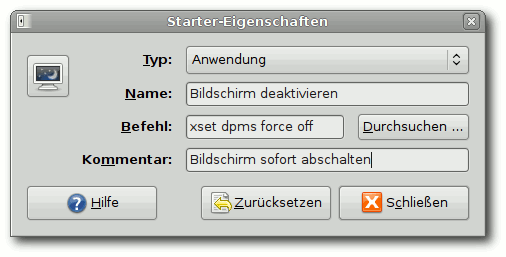
Bildschirm mit einem Klick abschalten.
Zum Index
Samsung-Druckertreiber im Test von Dominik Wagenführ
Die Funktionalität von Hardware unter Linux steht und fällt vor allem mit den Treibern. Sehr oft stellen Hardwarehersteller nur Windows-Treiber zur Verfügung. Samsung ist hier eine Ausnahme, da sie selbst proprietäre Treiber anbieten. Daneben gibt es aber auch noch andere freie Treiberprojekte. Samsung Unified Linux Driver
Im Samsung Download-Center (Link) findet man beim jeweiligen Druckermodell die ,,Unified Linux Driver''. Die Installation ist sehr einfach, man sollte nur die Installationshinweise (Link) beachten, da der Treiber ansonsten fehlerhafte Rechte auf einige System-Verzeichnisse setzt. Nach dem Herunterladen und Speichern der Datei VERSION-UnifiedLinuxDriver.tar.gz im Homeverzeichnis entpackt man das Archiv, so dass das Verzeichnis cdroot entsteht. Um Probleme mit den Berechtigungen zu vermeiden, öffnet man ein Terminal, bewegt sich in das Verzeichnis und passt die Rechte an: $ cd ~/cdroot # chown -R root:root *
Achtung: Vergisst man dies, wird für Verzeichnisse wie /etc oder /usr der angemeldete Benutzer als Eigentümer gesetzt! Als Voraussetzung für die Installation muss CUPS, SANE, GhostScript und ein C++-Kompiler (Paket build-essential) installiert sein. Die Installation weist aber bei einem Fehlen darauf hin. 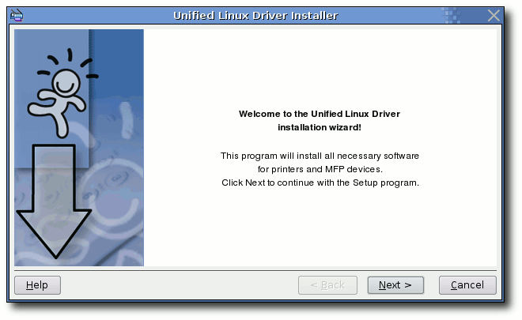
Samsungs ,,Unified Linux Driver''-Installer.
Jetzt kann man das Installationsprogramm per # ./autorun
starten. Während der Installation muss der Drucker angeschlossen und eingeschaltet sein, sodass dieser vom Installationsprogramm korrekt erkannt wird. Nach der Treiberauswahl ,,MODELLNUMMER (SPL-C)'' sollte das Gerät bereits funktionieren. SpliX
Wer den proprietären Samsung-Treiber nicht nutzen möchte, kann sich an das freie SpliX-Projekt (SPL Driver for Linux) (Link) halten. Die Entwickler haben größtenteils durch Reverse-Engineering die Treiberfunktionen für einige Samsung- und Xerox-Drucker implementiert. In vielen Distributionen ist der Treiber bereits enthalten und wird automatisch für Samsung-Drucker benutzt. Er kann gegebenenfalls über das Paket splix nachinstalliert werden. Wer sich den Treiber selbst kompilieren möchte, benötigt folgende Pakete:
- build-essential
- cupsddk
- libcupsimage2-dev
- libcupsys2-dev
Jetzt kann man das SpliX-Treiberarchiv herunterladen und entpackt es ins Homeverzeichnis. Man wechselt in das entstandene Verzeichnis (hier: Version 1.1.1) und kompiliert/installiert den Treiber mittels $ cd ~/splix-1.1.1 $ make # make install
Anstelle make install ist es empfehlenswert checkinstall zu nutzen, soweit das System dies zulässt. Nach einem Neustart von CUPS mittels # /etc/init.d/cupsys restart
kann man den Drucker über den Treiber ,,MODELLNUMMER 1.1.0'' dann im System einrichten. foo2qpdl
Der foo2qpdl-Treiber (Link) ist ein Linux-Druckertreiber für das QPDL-Protokoll. Er kann als Alternative zu SpliX gesehen werden, unterstützt aber weniger Druckermodelle. Der Treiber ist in den meisten Distributionen schon vorinstalliert. Für die Kompilierung benötigt man einen C++-Kompiler (Paket build-essential). Danach lädt man sich den Treiber (Link) herunter und entpackt das Archiv ins Homeverzeichnis. Mit $ cd ~/foo2zjs $ make
kompiliert man ein Hilfsprogramm. Dann muss man die Treiberdateien über $ ./getweb MODELLNUMMER
mit der jeweiligen Drucker-Modellnummer herunterladen. Diese können per $ ./getweb
abgefragt werden. Ein # make install # make cups
installiert danach die Treiber und startet das Drucksystem CUPS neu. Der Drucker kann dann über die normale Druckerkonfiguration mit dem Treiber ,,MODELLNUMMER Foomatic/foo2qpdl'' eingerichtet werden. Treiber-Qualität
Jeder der drei Treiber hat seine Vor- und Nachteile, die kurz aufgezeigt werden sollen. Als Beispiel wurde der Farblaserdrucker Samsung CLP-300 unter Ubuntu 7.10 ,,Gutsy Gibbon'' mit allen drei Treibern, die alle manuell installiert wurden, getestet. Die in Ubuntu 7.10 enthaltenen SpliX- und foo2qpdl-Treiber sind zu alt und unterstützen den CLP-300 nicht optimal. Schwarz / Weiß
Was in den Abbildungen nicht so gut zu erkennen ist: Der foo2qpdl-Treiber hat ein klein wenig besseres Schriftbild als der SpliX-Treiber. Über die Qualität des Samsung-eigenen Treibers im Farbmodus braucht man nicht reden, der Graustufenmodus sieht aber gut aus und ist mit dem SpliX-Treiber vergleichbar. Der CLP-300-Drucker in Verbindung mit dem CLP-600-Unified-Treiber erzielt ein recht gutes Ergebnis, auch wenn ein leichter Schatten um die Buchstaben bleibt.
| Schwarz / Weiß | |
| 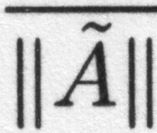 | |
| foo2qpdl-Treiber. | |
| 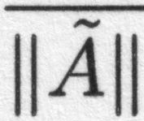 | |
| SpliX-Treiber. | |
| Unified-Treiber (CLP-300, Farbmodus). | |
| 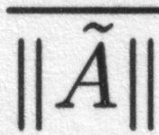 | |
| Unified-Treiber (CLP-300, Graumodus). | |
| 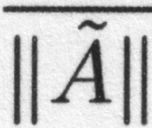 | |
| Unified-Treiber (CLP-600, Farbmodus). | |
Im Farbmodus ist das Bild etwas divergenter und der kleine hier gezeigte Ausschnitt kann das Gesamtbild nicht exakt widerspiegeln. Beim foo2qpdl-Treiber sieht man die einzelnen Druckpunkte, ein Ausdruck wirkt wie in Entwurfsqualität, die Farben werden aber korrekt wiedergegeben. Noch schlechter ist der Ausdruck beim SpliX-Treiber. Die Farben sind viel zu intensiv und etwas verwischt. Ein dunkles Grau wird so zu einem reinen Schwarz. Beim Samsung-Unified-Treiber wirken die Farben sehr kräftig. Leider sind die Buchstaben etwas verwaschen und in Verbindung mit schwarzer Schrift (siehe oben) ist das Gesamtergebnis unbrauchbar. Eine Besonderheit ist der CLP-600-Treiber für den Samsung CLP-300-Drucker. Die Farben wirken nicht ganz so kräftig, so wird ein Hellgrau gleich zu Weiß. Zusätzlich bleibt ein leichter Schatten um jeden Buchstaben. In Verbindung mit schwarzer Schrift (siehe oben) ist das Ergebnis aber annehmbar.
| Farbe | |
| foo2qpdl-Treiber. | |
| SpliX-Treiber. | |
| Unified-Treiber (CLP-300). | |
| 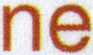 | |
| Unified-Treiber (CLP-600). | |
Da nur ein Drucker getestet wurde, kann man natürlich keine allgemeingültige Aussage treffen. Dafür, dass Samsung aber über die Spezifikationen der eigenen Drucker verfügt, ist das Ergebnis des Unified-Treibers schlecht. Die freien Treiber liegen vor allem bei schwarzer Schrift meilenweit vorne. Und auch bei der Farbe ist der foo2qpdl-Treiber nicht perfekt, aber im Vergleich mit dem Linux-Unified-Treiber wesentlich farbtreuer. Es bleibt zu sagen, dass die Unterstützung seitens Samsung besser sein könnte. Wer sich einen Samsung-Drucker kaufen möchte, sollte vorher genau überprüfen, welcher Treiber welches Modell unterstützt und gegebenenfalls vorher in der Gemeinschaft nach der Druckqualität fragen. Denn was ich gelernt habe: Die Aussage ,,Treiber funktioniert'' heißt nicht unbedingt, dass das Druckergebnis verwertbar ist. Links
http://support.samsung.de/support/support_down_main.aspx
http://ubuntuforums.org/showthread.php?t=341621
http://splix.ap2c.org/
http://www.cl.cam.ac.uk/ mgk25/jbigkit/
http://foo2qpdl.rkkda.com/
http://foo2zjs.rkkda.com/foo2zjs.tar.gz
Zum Index
C.U.O.N. im täglichen Büroeinsatz von Jürgen Hamel
Das C.U.O.N.-System sowie der Client pyCuon bilden ein System zur Auftragsbearbeitung, Warenwirtschaft und allgemeinen Datenverwaltung. Außerdem ist ein Document Management System (DMS) integriert. Das komplette System steht unter der GPLv3. Linux ist reif für den Desktop und dieser Bericht soll die Möglichkeiten dazu aufzeigen. Vorwort
Effektiveres Arbeiten mit C.U.O.N.
Nach mehreren Jahren Entwicklung ist C.U.O.N. jetzt hervorragend geeignet für den Einsatz auf dem Linux-Desktop. Durch den Einsatz dieser Software werden viele Arbeitsabläufe gestrafft und vereinfacht. Das Zusammenspiel der verschiedenen Office-, Grafik-, Sound-, Text- Internet- und Spezialprogramme sowie der Daten im SQL-Server wird koordiniert und damit transparenter für den Anwender. Hier nun ein fiktiver Tagesablauf mit C.U.O.N. Vormittags
C.U.O.N. starten
Als Erstes starte ich morgens C.U.O.N. und logge mich ein. Ein Kontakt von gestern, den ich nicht mehr geschafft habe, öffnet sich automatisch. Ich klicke auf ,,Gehe zu Adresse'', um mir die Notizen zu dieser Adresse durchzulesen. Aha, mein Gesprächspartner ist erst ab 14.00 Uhr erreichbar. Ich setze im Kontakt die Uhrzeit auf 14.00 Uhr und mit ,,sleeps'' schließt sich der Kontakt. 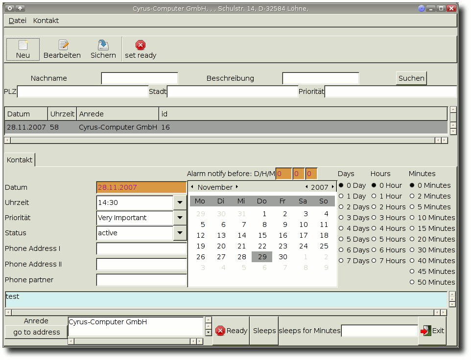
Ein Kontakt öffnet sich.
Briefe und E-Mail
Jetzt geht es an das Lesen der E-Mails und der Briefpost. Bei den E-Mails ist ein neues Datenblatt zu einem Trigger-Baustein. Ich speichere das PDF-Dokument und öffne in C.U.O.N. die Artikelverwaltung und suche den passenden Eintrag. Dort speichere ich das PDF im DMS. So kann ich es mir ohne langes Suchen bei Bedarf ansehen. Da diese Information für einige meiner Kunden wichtig ist, klicke ich in der Adressverwaltung auf Newsletter, füge das Kürzel ,,Tr001'' ein und nehme als Anhang die PDF-Datei. Noch ein kurzer Text und der Newsletter wird per E-Mail verschickt. Mit der Newsletterfunktion ist es möglich, verschiedene Adressaten blitzschnell zu erreichen, sei es per E-Mail oder als Print-Version. Die nächste E-Mail hat einen Windows-Word-Anhang. Kein Problem, OpenOffice.org öffnet ihn und ich sehe mir das mal an. Sieht interessant genug aus und ich speichere es im ODF-Format und hinterlege es in C.U.O.N. bei der Adresse. Für eine standardisierte Antwort klicke ich auf ,,Brief'' und suche mir aus den Vorlagen im DMS das passende Dokument heraus. OpenOffice.org öffnet sich und die Vorlage ist schon mit allen relevanten Daten aus der Adressverwaltung gefüllt. Ich brauche sie nur noch per E-Mail zu versenden. Bei der Briefpost ist die neue ,,Linux-Zeitschrift''. Mal sehen, was es Interessantes gibt. Nach dem ersten Durchblättern gebe ich in der Literaturverwaltung von C.U.O.N. die wichtigsten Artikelüberschriften mit ein paar Stichpunkten ein. Außerdem ist ein interessantes Python-Skript darin, das ich kurz im DMS einscanne. Eine neue Idee
Plötzlich fällt mir zu der neuen Website etwas ein. Da ich jetzt nur wenig Zeit habe, kann ich nur hoffen, dass ich mich morgen noch daran erinnere, oder besser noch, ich trage es sofort in C.U.O.N. ein! Also öffne ich die Ideenverwaltung, gehe zur Webseitengestaltung und füge im Mindmap-Tool meine Idee ein. So ist es schön übersichtlich und ich kann morgen sicher sein, alle wichtigen Ideen für die neue Website zusammenzuhaben. So, jetzt erstmal Mittagspause machen. 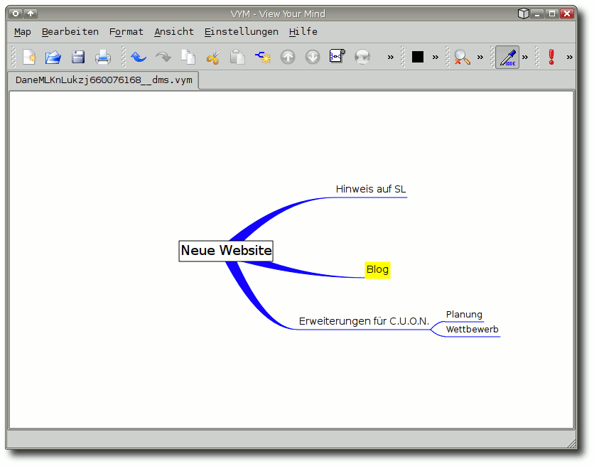
Meine Idee eintragen.
Nachmittags
Termine nachsehen
Jetzt schaue ich mir zuerst einmal an, welche Termine ich im Rest der Woche habe. Das kann ich direkt in C.U.O.N. machen, ist zwar ein wenig spartanisch, dafür kann ich aber jeden Termin sofort anklicken und mir alle Infos anschauen. Je nach Einstellung kann ich auch die Termine anderer Mitarbeiter ansehen. Da C.U.O.N. die Termine auch als iCal-Format zur Verfügung stellt, kann man sie sehr übersichtlich im Mozilla Sunbird oder ähnlichen Programmen darstellen. 14.00 Uhr - pünktlich poppt der Kontakt von heute Morgen auf. Ich klicke auf die Adresse und rufe an. Während des Gesprächs tippe ich gleich die wichtigsten Bemerkungen bei den Notizen ein. Da ein Gesprächstermin gewünscht wird, gehe ich zum ,,Gesprächspartner''-Tab und lege Frau Musterfrau an. Dann klicke ich auf ,,Termine'' und lege den Termin fest. Nach dem Gespräch schicke ich mit C.U.O.N. noch eine Terminbestätigung per E-Mail raus. Auch da fügt das DMS alle Daten wie Adresse, Gesprächspartner, Mitarbeiter, Außendienstmitarbeiter, Termin, Uhrzeit etc. ein. 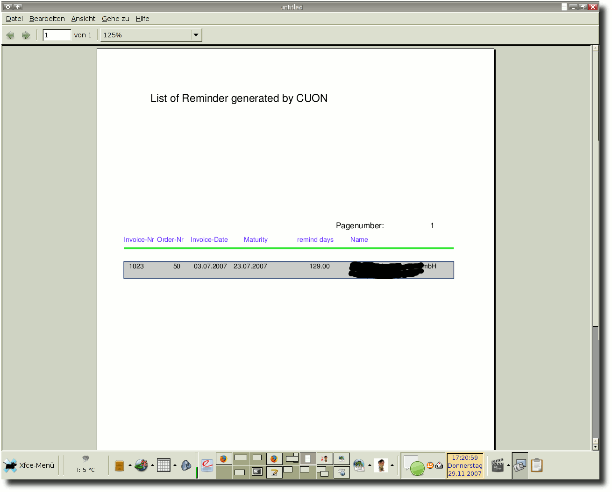
Mahnliste.
Aufträge bearbeiten
So, jetzt noch zwei neue Aufträge erfassen, Lieferschein und Rechnung drucken. Dazu gehe ich in C.U.O.N. auf die Adresse und klicke dort auf ,,neuer Auftrag''. Ein neues Auftragsfenster öffnet sich und viele Daten sind schon ausgefüllt. Ich gehe zu den Positionen und füge über die Schnellauswahl die Artikel hinzu. Dann zum Drucken. Da ich für Rechnung und Lieferschein zwei verschiedene Drucker voreingestellt habe, wird der Lieferschein direkt im Lager gedruckt, während die Rechnung aus dem Drucker im Nebenraum kommt. Es ist nun Zeit, die Bankauszüge zu kontrollieren und die Zahlungen direkt in C.U.O.N. einzutragen. Zur Kontrolle noch die ,,offenen Posten'' anschauen - sieht alles gut aus. Kundenbetreuung
Nun gilt es noch eine Anfrage eines Interessenten zu beantworten. Als Erstes trage ich die Daten in der Adressverwaltung ein und rufe dann an. Leider ist meine Ansprechpartnerin erst ab Montag wieder da. Also setze ich einen Kontakt für Montag, 10.00 Uhr, der mich dann pünktlich an den Anruf erinnern wird. Außerdem trage ich noch den Gesprächspartner und ein paar Notizen ein. So bin ich dann beim nächsten Gespräch sofort auf dem Laufenden. Beim Kunden
Kurzbesuch bei einen Kunden. Da ich den Weg nicht genau kenne, klicke ich im DMS die Wegbeschreibung an. Google Earth öffnet sich und ich kann die Wegbeschreibung ausdrucken. Also kann ich losfahren. Beim Kunden erfahre ich, dass ihn die Daten des neuen Triggerbausteins interessieren. Mit meinem Linux-Notebook, dem Internet und C.U.O.N. kein Problem, denn das neue Datenblatt habe ich ja heute Morgen hinterlegt. Der PDF-Viewer öffnet sich und ich habe die Daten vor mir. Ich sehe außerdem, dass ein anderer Mitarbeiter vor fünf Minuten noch ein Zusatzblatt hinterlegt hat. Ich klicke es an und automatisch öffnet sich GIMP, um die Zeichnung darzustellen. So kann ich absolut aktuell auf alle verfügbaren Daten zugreifen. Ein neues Projekt
Der Kunde hat bestellt und da es sich um ein größeres Vorhaben handelt, lege ich in der Projektverwaltung ein neues Projekt an. Dazu gehe ich in C.U.O.N. zur Adresse und klicke ,,neues Projekt'' an. Es öffnet sich das Projektfenster mit den Kundendaten. Als Erstes gehe ich zur ,,Zusatzinformation'' und scanne den Vertrag ein. Als Rechte setze ich ,,Nur lesen'' für User und Gruppe, da dieses Dokument nicht verändert werden soll. 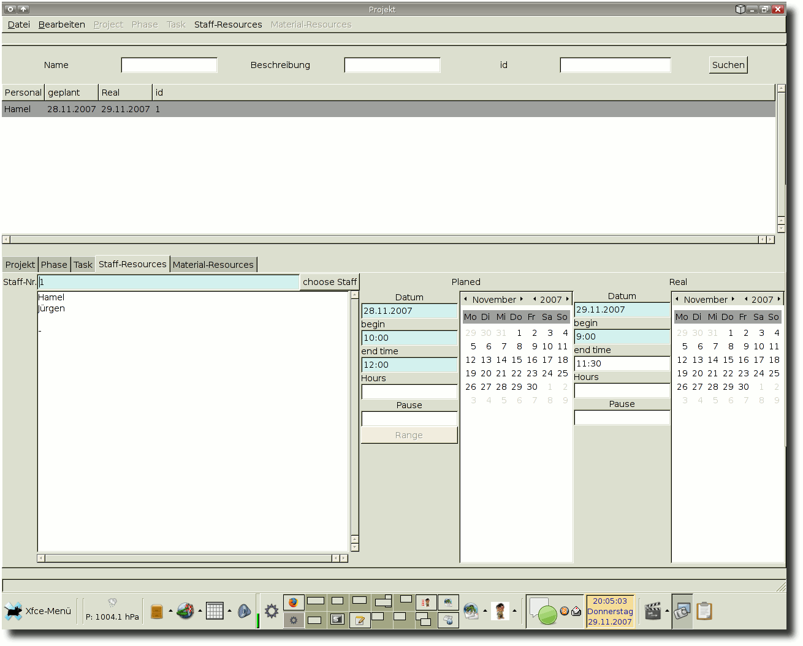
Personalressourcen für das Projekt.
In den nächsten Tagen werde ich entsprechende Einträge bei den Personal- und Material-Ressourcen tätigen, jeweils die kalkulierten und tatsächlichen Werte. So kann ich dann jederzeit sehen, ob das Projekt noch im veranschlagten Kostenrahmen ist oder irgendetwas aus dem Ruder läuft. Jetzt ist aber endgültig Feierabend. Abends
Nach dem Abendessen schaue ich mir im Internet an, was es Neues auf Pro-Linux gibt. Dann will ich noch ein paar Zeilen programmieren. Dabei überlege ich mir Möglichkeiten, das Python-Skript von heute Morgen zu nutzen. Also öffne ich C.U.O.N. und gehe zur Literaturverwaltung. Ich klicke auf die ,,Zusatzinformation'' und habe das Skript am Bildschirm. 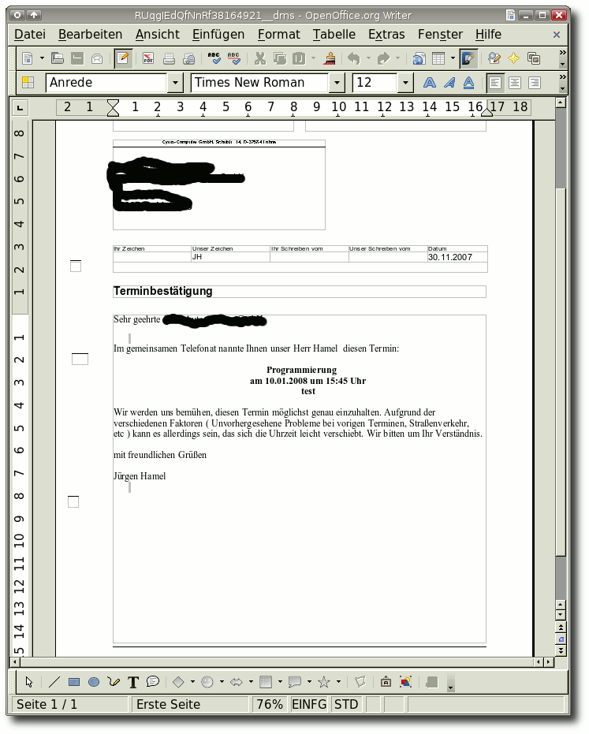
Terminbestätigung faxen.
Plötzlich fällt mir siedendheiß ein, dass ich vergessen habe, eine Terminbestätigung rauszufaxen. Aber eigentlich kein Problem, denn über C.U.O.N. kann ich mit wenigen Klicks die Terminbestätigung direkt über den Faxserver der Firma versenden. Das DMS sorgt für ein korrekt ausgefülltes Formular, und mit einem Klick wird es zum Firmen-Faxserver übertragen - ok, erledigt. Fazit
Linux ist auf dem Desktop der Firmen längst angekommen. Mit Programmen wie OpenOffice.org, Evolution, KMail, Mozilla Firefox, Mozilla Sunbird, VYM, vielen anderen und natürlich C.U.O.N. lässt sich schnell und einfach alles im Büro erledigen. Fast alle der von uns betreuten Firmen setzen inzwischen Linux auf dem Desktop ein. Für proprietäre Windows-Programme gibt es entweder einen Windows-Terminalserver oder VirtualBox bzw. VMware. Aber immer seltener wird Windows benötigt. Gerade die hervorragenden Netzwerkeigenschaften von C.U.O.N. sorgen dafür, dass das Arbeitsleben in einer mobilen Gesellschaft viel reibungsloser funktioniert. Daten, die von einem Außendienstmitarbeiter erfasst werden, können sofort weiter bearbeitet und genutzt werden. Dokumente und Daten sind überall verfügbar. Mein Arbeitsplatz im Büro oder auf dem Notebook funktioniert genauso wie ein Arbeitsplatz zu Hause. Mit dem PDA kann ich im Lager direkt Daten eingeben. Durch die Nutzung verschiedener GUIs lässt sich C.U.O.N. sehr flexibel anpassen. Jeder Anwender kann eigene Masken benutzen. Vorlagen, Listen und Reports sind individuell anpassbar und können sogar für Mandant oder Benutzer zugeschnitten werden. Da der Client neben Linux auch andere Betriebssysteme wie Microsoft Windows oder Maemo (Nokia N800) unterstützt, steht einem universellen Einsatz von C.U.O.N. im Unternehmen nichts entgegen. Hilfe, Dokumentation, Sourcen
Ein umfangreiches Wiki mit dem Adminhandbuch und dem Benutzerhandbuch (beides in Deutsch) ist auf der Homepage (Link) vorhanden. Dort ist auch die API-Dokumentation sowie ein Schaubild vorhanden. Ebenfalls stehen dort sowie auf Berlios (Link) Downloadmöglichkeiten zur Verfügung. Auf www.cuon.org (Link) stehen ebenfalls Cuon-Clients für Linux und Windows mit grafischem Installer zur Verfügung. Aktuelle Schnappschüsse kann man übers SVN von Berlios beziehen. Links
http://www.cuon.org/
http://developer.berlios.de/projects/cuon/
http://www.cuon.org/
Zum Index
Fernsehen übers Internet mit Zattoo von Eva Drud
Fernsehen auf dem PC ist schon lange keine Besonderheit mehr. Normalerweise wird aber zusätzliche Hardware benötigt, um den Kabelanschluss oder DVB-T nutzen zu können, es sei denn, man nutzt die Streaming-Angebote der öffentlich-rechtlichen Sender (wie die ZDF-Mediathek (Link)) oder Sendungsarchive wie die von RTL (Link). Der Nachteil besteht darin, dass Sendungen erst nach dem regulären Sendetermin abgerufen werden können. Mit dem TV-Player Zattoo (Link) ist es möglich, werbefinanziert das Programm ausgewählter Sender ,,live'' über das Internet anzuschauen. Die Player-Software ist nach einer Anmeldung für Mac, Windows und verschiedene Linux-Distributionen verfügbar (Link), die Installation des Adobe Flash-Plugins ist stets erforderlich. Für Ubuntu/Debian gibt es ein fertiges Paket, was bei der Installation wenig Probleme bereiten sollte - zumindest Ubuntu Edgy Eft und Debian Etch werden als ,,unterstützte Distributionen'' aufgeführt. Nutzer anderer Distributionen haben die Wahl zwischen einem DEB-Paket, einem RPM-Paket und einem Archiv, dessen Inhalt nach /usr kopiert werden muss. Es gibt eine allgemeine Anleitung sowie spezielle Hinweise für Fedora Core 6 und OpenSUSE mit GNOME oder KDE (Link). Zusätzlich müssen je nach Distribution einige weitere Schritte durchgeführt werden, wie zum Beispiel das Anlegen von Symlinks. Auf jeden Fall muss das Paket libgtkglext1 (Name kann je nach Distribution leicht abweichen) installiert sein.
Das Zattoo-Icon.
Man installiert dann entweder das RPM- oder DEB-Paket oder verschiebt die im Archiv enthaltenen Dateien an den entsprechenden Platz in /usr. Dann lädt man sich xulrunner herunter (Link), es wird empfohlen, den Ordner nach /usr/lib/zattoo zu kopieren. Schließlich müssen noch Symlinks von den Bezeichnungen der xulrunner-Bibliotheken auf die eigentlichen Namen gesetzt werden: $ cd /usr/lib/zattoo/ # ln -s xulrunner/libgtkembedmoz. so libgtkembedmoz.so.0d # ln -s xulrunner/libmozjs.so libmozjs.so.0d # ln -s xulrunner/libnspr4.so libnspr4.so.0d # ln -s xulrunner/libplc4.so libplc4.so.0d # ln -s xulrunner/libplds4.so libplds4.so.0d
# ln -s xulrunner/libxpcom.so libxpcom.so.0d # ln -s xulrunner/libxul.so libxul.so.0d # ldconfig /usr/lib/zattoo
Sollte nach dem Start trotz installiertem Flash-Plugin dieses nicht gefunden werden, muss man sich von (Link) die Archivdatei herunterladen und anschließend die Datei libflashplayer.so in das Verzeichnis ~/.mozilla/plugins kopieren (der Ordner plugins muss ggf. angelegt werden) (Link). Der Flash-Player wird benötigt, um die vor jedem Programmwechsel eingeblendete Werbung darzustellen. Diese Anleitung funktioniert auf jeden Fall für Ubuntu Gutsy Gibbon, wie bereits gesagt, gibt es einige spezielle Anleitungen für weitere Distributionen. Zur Zeit stehen 19 verschiedensprachige Sender zur Verfügung, darunter auch ,,Das Vierte'', ,,Comedy Central'', ,,MTV'', ,,DSF'' und ,,CNN''. Um in den vollen TV-Genuss zu kommen, ist DSL allein allerdings nicht ausreichend, selbst eine 2 MBit-Leitung führt zu Fehlermeldungen, es braucht also eine sehr schnelle Verbindung. Die genaue Bandbreite, die notwendig ist, ist allerdings nicht genauer spezifiziert - dass mit 12 MBit keine Probleme auftreten, zeigt, dass das Problem nicht serverseitig zu suchen ist. Ein weiterer Nachteil liegt in der geringen Sendequalität, die Auflösung lässt nur ein kleines Playerfenster zu (siehe Screenshot). 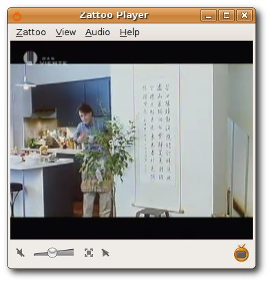
Das Zattoo-Playerfenster.
Die Anwendung liegt wohl eher darin, neben der Arbeit eine Sportsendung verfolgen zu können, als sich gemütlich auf dem Sofa einen Film anzuschauen - selbst in dem kleinen Playerfenster fällt die mangelhafte Bildqualität auf (Treppeneffekt an schrägen Linien). Neben der aktuellen stabilen Version ist auch noch eine ,,Technical Preview'' verfügbar, die unter anderem auch eine Programmübersicht bietet (siehe Screenshot). Die Programmübersicht wird von tvtv (Link) bereitgestellt und bietet neben einer relativ ausführlichen Sendungsbeschreibung auch weitere Informationen zu Besetzung und bisherigen Bewertung durch andere Zuschauer. 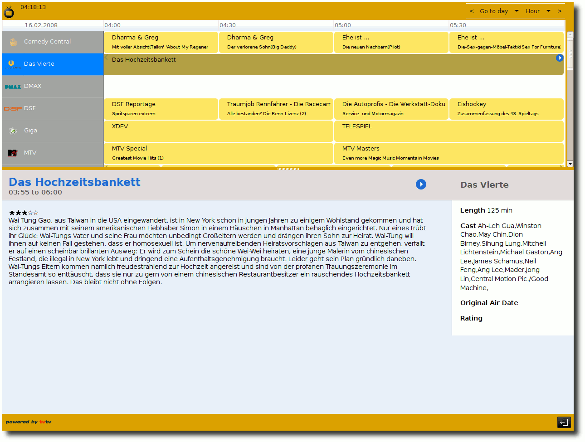
Der elektronische Programmführer der kommenden Zattoo-Version.
Links
http://www.zdf.de/ZDFmediathek/content/9602?inPopup=true
http://rtl-now.rtl.de/
http://zattoo.com/
https://zattoo.com/download
https://zattoo.com/downloadlinux
http://download.zattoo.com//xulrunner-1.8.0.4.en-US.linux-i686.tar.gz
http://www.adobe.com/shockwave/download/download.cgi?P1_Prod_Version=ShockwaveFlash
http://wiki.ubuntuusers.de/Zattoo
http://www.tvtv.de
Zum Index
Multimediatastaturen mit xbindkeys zähmen von Thorsten Schmidt
Oft steckt der Teufel im Detail. Da sitzt man nun vor seinem Keyboard mit den vielen Multimediatasten, aber sie bleiben unerkannt. Genau hier leistet das Programm xbindkeys Abhilfe: Tastatur- und Maussignale unter X mitschneiden und ihnen eigene Kommandos zuordnen ist die Devise. Installation
Philippe Brochards xbindkeys (Link) existiert seit 2001, ist also ein Klassiker. Dementsprechend sollte xbindkeys in den Paketquellen vieler Distributionen vorhanden und über deren Paketverwaltung (Paket xbindkeys) zu installieren sein. Der Versionsstand des Projektes liegt zum gegenwärtigen Zeitpunkt bei 1.8.2.
Multimedia-Tasten.
© Mac (Public Domain)
{kind=link}
Nach der Installation stellt sich die Frage: Wie funktioniert das jetzt? Hier das Kochrezept: Zuallererst benötigt xbindkeys eine Konfigurationsdatei, in die der Nutzer später seine Tastencodes und Kommandos eintragen kann. Dank des Befehls $ xbindkeys -d > ~/.xbindkeysrc
in einem Terminal samt seiner Umleitung stellt das kein Problem dar - et voilà. Damit liegt nun eine Datei mit beispielhaften Konfigurationen vor. Tastaturcodes ermitteln
Bevor die Tastaturcodes ermittelt werden, sollte man die Datei ~/.xbindkeysrc mit einem Editor öffnen. So erspart man sich ein umständliches Notieren, indem man dort die Ergebnisse gleich kopiert und einfügt. Anschließend wird ein zweites Terminal geöffnet und dort $ xbindkeys -k
für eine einzelne Taste und mit den Schaltern -mk für eine Kombination von zwei oder mehr Tasten gestartet. Nun öffnet sich ein kleines Fenster, und man zieht es halb aufs Terminal, sodass der Prompt verblasst. Jetzt heißt es Tastendrücken oder aufs kleine Fenster klicken und das Ergebnis im Terminal verfolgen. Ein anschauliches Beispiel? Hier das Resultat für Strg + F : a)
(Scheme function) m:0x4 + c:41 Control + f
An dieser Abfolge sollte sich später der Eintrag in der ~/.xbindkeysrc orientieren: Unter der (Scheme function) steht eine Zeile mit der Tastenkombination entweder als Tastencode (m:0x4 + c:41) oder als Keysymbol (Control + f). Nun zu den bislang unerkannt gebliebenen Multimediatasten. Hier könnte das Ergebnis einer Taste so aussehen: b)
(Scheme function) m:0x0 + c:200 NoSymbol
Klar, dass man hier die Zeile mit dem Tastencode für ~/.xbindkeys benutzen möchte. Vorerst festgehalten: xbindkeys liefert demnach immer eine (Scheme function), also eine auf unsere Tastenkombination auszuführende Aktion, und die Tastenkombination (oder Taste) selbst. Beides wird jetzt miteinander in Bezug gebracht. .xbindkeysrc editieren
Nun muss man für beide Beispiele die ~/.xbindkeysrc entsprechend editieren. Über den Editor fügt man das gewünschte Kommando und die Tastenkombination ein, wobei das Kommando immer in Anführungszeichen steht. Solange die auszuführenden Dateien in $PATH (Link) liegen, reicht der bloße Datei- bzw. Programmname. Ist das nicht der Fall, muss man den absoluten Pfad zur auszuführenden Datei angeben. Sollte man eine der nur mit Tastaturcodes bezeichneten Multimediatasten benutzen wollen, empfiehlt es sich, einen Kommentar anzufügen. #a)Lautstärke um 5% heben amixer -c 0 set PCM 5%+ Control + f
#b)Funktionstaste 1 rechts claws-mail m:0x0 + c:200
Welche Aktion der Tastendruck auslöst, ist mehr oder weniger offensichtlich. Aber welche Tastenkombination dazu dient, könnte später Probleme aufwerfen - wie bei b), wenn Claws-Mail via m:0x0 + c:200 starten soll. Bei temporärem Gedächtnisverlust hilft einem ein $ cat ~/.xbindkeysrc
wieder auf die Sprünge und zeigt die Tastenkombinationen samt Kommentar, während ein $ xbindkeys_show
nur die Scheme Function und die Tastenkombination liefert. xbindkeys automatisch starten
So weit, so gut. Nun möchte man xbindkeys als Dämon bei jedem Start von X mit aufrufen. Hierzu bietet sich ein Eintrag in die ~/.xinitrc an: Über einen Editor wird die Datei geöffnet und xbindkeys &
hinzugefügt. Gleiches erreicht man bei den beiden großen Desktopumgebungen KDE und GNOME über einen Eintrag in deren jeweilige Sitzungsverwaltung (Link). Beim nächsten Login bzw. Start des X-Servers sollten dann die Tastaturfunktionen wieder vorhanden sein. Wer das - aus welchen Gründen auch immer - nicht möchte, startet xbindkeys nach dem Login manuell im Terminal über xbindkeys. Auf meinem Keyboard ,,Cherry CyMotion Master Express (USB auf PS2)'' bleiben leider einige Funktionstasten am rechten und linken Rand des Keyboards unerkannt. Nach kurzer Recherche bin ich auf folgende Lösung gestoßen: Sie funktioniert nur bei PS/2-Keyboards, aber sehr gut im Verbund mit xbindkeys (Link). Eine Alternative zu xbindkeys findet man in freiesMagazin Ausgabe 08/2007 mit dem Programm keyTouch (Link). Links
http://hocwp.free.fr/xbindkeys/xbindkeys.de.html
http://linuxwiki.de/PATH
http://wiki.ubuntuusers.de/Autostart
http://gentoo-wiki.com/HOWTO_Use_Multimedia_Keys#Finding_raw_scan_codes_-_PS.2F2_keyboards
ftp://ftp.freiesmagazin.de/2007/freiesMagazin-2007-08.pdf
Zum Index
Paketverwaltung – von APT und RPM von Matthias Kietzke
Software unter Linux einspielen ist mehr, als eine Datei mit Setup-Routine aufzurufen. Eine Variante ist das Übersetzen von Quellcodes in ausführbare Formate (Kompilieren). Eine andere nutzt fertige Binärformate, welche bereits für bestimmte Distributionen und Systemarchitekturen vorkonfiguriert sind. Paketmanager spielen dabei eine wichtige Rolle. Im folgenden Artikel sollen zwei wichtige Paketmanager vorgestellt werden, RPM und DPKG. RPM steht für RPM Package Manager (früher Red Hat Packet Manager) und wurde von Red Hat entwickelt. Es ist eine freie Software und steht unter der GPL. DPKG steht für Debian Package Manager und wurde von Debian entwickelt. Es steht ebenfalls unter der GPL. Da sich jeder Distributionshersteller für einen bestimmten Paketmanager entscheidet, hat der Anwender hier nicht die Wahl. Fedora, SUSE und Red Hat nutzen RPM, Debian und Ubuntu hingegen DPKG. Darüber hinaus gibt es noch weitere Systeme u. a. von Gentoo Linux. Die Aufgabe eines Paketmanagers ist die Verwaltung der installierten Software. Dazu gehören unter anderem der Linuxkernel, Bibliotheken, Anwenderprogramme und Dokumentationen. Gemeinsamkeiten
Die zur Verfügung gestellten Binärpakete enthalten neben den komprimierten Programmdateien diverse Metainformationen, wie Programmversion, Installationspfade und Abhängigkeiten zu anderen Programmen. Diese Abhängigkeiten sind typisch für Linux-Software. So basieren Programme auf gemeinsamen Bibliotheken oder Funktionalitäten in anderen Programmen. Diese Verflechtung ermöglicht eine modulare Softwareumgebung, den Austausch von Funktionalitäten mit denen anderer Programme und einer Minimierung des Speicherplatzes. Die Software ist also kein monolithischer Block, sondern eine lose Kopplung von Funktionalitäten über Programme hinweg. Leider können die Paketmanager Abhängigkeiten nicht automatisch auflösen und keine Software nachladen. Die benötigten Programme müssen manuell besorgt und installiert werden. Zahlreiche Aufsätze (Frontends) lösen dieses Manko jedoch. Bedient werden beide Systeme über die Kommandozeile. Es gibt aber auch grafische Programme, auf die später eingegangen wird. Die Dokumentation ist ebenfalls sehr umfassend und in mehreren Sprachen verfügbar. Unterschiede
Zunächst gibt es Unterschiede in den entsprechenden Binärformaten. Zu erkennen sind RPM-Pakete an der Endung .rpm und DPKG-Pakete an der Endung .deb. Das eine System kann mit den jeweils anderen Formaten nicht umgehen. Es gibt jedoch Konvertierungstools wie beispielsweise alien, das zwischen den Formaten umwandeln kann (Link). Weiterhin unterscheiden sich beide Systeme in den Bedienungsparametern. Diese sind so unterschiedlich, dass der Anwender, der ein System gewohnt ist, eine kurze Eingewöhnung auf dem anderen System bedarf. Die Tabelle zeigt eine Auswahl an einigen Beispielen.
| Bedienungsparameter | ||
| DPKG | RPM | |
| Paket installieren | dpkg -i foo.deb | rpm -i foo.rpm |
| Paket deinstallieren | dpkg -r foo | rpm -e foo |
| Paketinformationen abfragen | dpkg -p foo | rpm -qi foo |
| Alle installierten Pakete anzeigen | dpkg -l | rpm -qa |
Da die Bedienung der Paketmanager etwas umständlich und wenig komfortabel ist, wurden Frontends entwickelt, die auf den Paketmanagern aufsetzen und um Funktionalitäten erweitern. Diese können auf Paketquellen im Internet, auf DVD oder im Firmennetzwerk zugreifen (Repository) und Pakete von dort nachladen. Weiterhin können sie Abhängigkeiten zwischen den Paketen automatisch auflösen und benötigte Pakete gegebenenfalls nachladen und mit installieren. Die bekanntesten Frontends für Debian-basierte Systeme sind apt-get und dessen Alternative aptitude (Link). apt-get installiert bei der Installation eines Paketes automatisch weitere Pakete, die für den Betrieb notwendig sind. Darüber hinaus schlägt apt-get Pakete zur Installation vor. Diese sind zum Programmbetrieb nicht zwingend notwendig, ermöglichen jedoch eine bessere Funktionalität, beispielsweise Dokumentationen oder eine Rechtschreibprüfung. Mit apt-get ist es auch möglich, bestimmte Programmversionen aus verschiedenen Repositories in einem System zu installieren (Pinning). So kann der Linuxkernel beispielsweise aus dem Stable-Zweig kommen, während das X-Window-System mit einer neueren Version aus dem Testing-Repository installiert wird. Neben kommandozeilenbasierten Frontends gibt es auch grafische Aufsätze. Für Debian-Distributionen sei hier dselect genannt. Mit Hilfe der Pfeiltasten kann durch eine Paketliste navigiert und Software zum Installieren und Entfernen markiert werden. Ubuntu verwendet Synaptic, welches einsteigerfreundlich und optisch ansprechend gestaltet ist. SUSE nutzt Yast2 und Fedora yum. Alle Programme sind ähnlich zu bedienen und haben einen vergleichbaren Funktionsumfang. Da die meisten Frontends individuelle Daten in eigenen Datenbanken speichern, ist es sinnvoll, sich für ein System zu entscheiden und dieses dann durchgängig zu nutzen. Der ständige Wechsel zwischen verschiedenen Paketverwaltungen kann zu Inkonsistenzen und einem instabilen System führen. Ein Projekt zur Vereinheitlichung der verschiedenen Verfahren ist der Smart Package Manager (Link). Dieser ist seit 2004 in Entwicklung und kann mit diversen Binärformaten und Repositories umgehen. Zusammenfassung
Die heutigen Paketverwaltungen funktionieren sehr gut und jede Distribution hat hier ihren eigenen Weg gefunden. Schade ist, dass Binärpakete oft nur für wenige große Distributionen verfügbar sind, während Nutzer von kleineren Systemen oft selbst kompilieren müssen. Projekte wie der Smart Package Manager helfen, einen gemeinsamen Konsens zu entwickeln und die Paketverwaltung distributionsunabhängig zu vereinheitlichen. Man sollte sich bei seiner Distribution für ein Frontend entscheiden und, um Inkonsistenzen zu vermeiden, dieses dann durchgängig nutzen. Links
http://www.linux-community.de/Neues/story?storyid=20149
http://labix.org/smart
http://www.linuxhaven.de/dlhp/HOWTO/DE-RPM-HOWTO-3.html
http://xinux.de/docs/linux/rpm/
http://xgen.iit.edu/cgi-bin/man/man2html?dpkg
Zum Index
Webzwonull plus GPL: die AGPL von Christian Soeder
Die GPL wurde in Zeiten geschrieben, in denen Webanwendungen bei weitem nicht die gleiche Relevanz wie heute hatten: Programme wie EyeOS, die ein eigenes Betriebssystem im Browser simulieren, Google Documents, Gmail und andere waren nicht im Entferntesten vorstellbar. Dieser Sachverhalt führt zu folgendem Problem: Traditionell muss man Programme auf GPL-Basis, wenn man sie bearbeitet und weitergibt, ebenfalls unter die GPL stellen und den Quelltext mitliefern. Dies jedoch trifft auf moderne Webprogramme wie Drupal, Wordpress, Joomla und andere nur bedingt zu. Hier hat man die Möglichkeit, die GPL ein Stück weit ,,auszutricksen'': Man kann ein CMS wie WordPress verwenden, von der Arbeit anderer profitieren und muss Verbesserungen trotzdem nicht weitergeben, auch wenn man andere daran indirekt teilhaben lässt. Ein extrem aufgebohrtes WordPress mit Funktionen, die auch anderen zugutekommen, jedoch nur dem Autor bekannt sind, ist juristisch gesehen vollständig GPL-konform; moralisch gesehen kann man hier anderer Meinung sein. Diese Lücke versucht die AGPL, die GNU Affero General Public Licence (Link), zu schließen. Frühere Versionen wurden nicht von der Free Software Foundation veröffentlicht, die aktuelle Version, die AGPLv3, jedoch schon. Dies hat den Vorteil, dass man nun zum ersten Mal GPLv3- und AGPLv3-Programme gemeinsam verwenden kann, da die Lizenzen nicht mehr komplett inkompatibel sind. Frühere Versionen der AGPL und der GPL waren zueinander inkompatibel, obwohl die eine auf der anderen basierte. Eine reichlich paradoxe Situation, die jedoch dem starken Copyleft der GPL bzw. der AGPL geschuldet ist. Auch die aktuellen Versionen der AGPL und der GPL können nicht beliebig kombiniert werden: Ein GPLv3-Programm kann niemals ein AGPLv3-Programm werden bzw. umgekehrt - durch das starke Copyleft muss ein GPLv3-Programm immer ein GPLv3-Programm bleiben und ein AGPLv3-Programm immer ein AGPLv3-Programm. Bei der Kombination von GPLv3- und AGPLv3-Programmen verbleiben die AGPLv3-Teile weiterhin AGPLv3, das gemeinsame Werk fällt hingegen unter die GPLv3. Die ,,Bevorzugung'' der GPL ist hierbei kein Versehen oder gar Zufall, sondern gewollt. Links
http://www.fsf.org/licensing/licenses/agpl-3.0.html
Zum Index
Rezension: Freie Software - Zwischen Privat- und Gemeineigentum von Thorsten Schmidt
Wie gelingt es einer Gesellschaft, ,,die Balance zwischen Wissen als Ware und Wissen als öffentlichem Gut'' zu halten? Mit dieser Frage steckt Grassmuck das allgemeine Thema in seinem Buch ,,Freie Software zwischen Privat- und Gemeineigentum'' ab. Unschwer zu erkennen, erfährt dieses Thema späterhin eine Einschränkung auf das Wissen rund um Software. Grassmuck nähert sich seinem Thema in zwei Schritten in Teil 1 und 2 des Buches. Im ersten Teil beleuchtet Grassmuck in einer historischen Rückschau das allgemeine Thema. Dazu wählt er als Ausgangspunkt das Wesen der Allmende (Link). Anhand der Allmende stellt Grassmuck materielle Eigentumsverhältnisse zur Zeit des Mittelalters dar: Eigentum ist zu dieser Zeit meist kollektives Eigentum und bezieht sich dabei auf natürliche Ressourcen (Boden und Gewässer etc.), die die Gemeinde bewirtschaftet. Grassmuck schildert den schrittweisen Zerfall der Allmende und ihre Transformation in Privateigentum. Parallel zum Zerfall der Allmende bricht mit Gutenberg (Link) nicht nur die Zeit des Buchdrucks im Europa des 15. Jahrhunderts an, sondern auch die Phase anderer tiefgreifender Umwälzungen. Buchdruckergilden, Autoren und Erfinder betreten die öffentliche Bühne - man befindet sich an der Schwelle zum Urheberrecht. Wie Grassmuck weiter schreibt, erkennt man nun folgende Problemlage: Einerseits sollen die Produkte des Erschaffers gewürdigt und geschützt werden, sodass er daraus einen finanziellen Vorteil ziehen kann, andererseits soll die Öffentlichkeit auch aus den Neuerungen ihren Nutzen ziehen: als Lehre und Inspiration. Das Entstehen des Urheber- und Patentrecht ist eine erste Antwort hierauf. Grassmuck schildert weiterführend die Entwicklungslinien des ,,Droit d'auteur'' (Link) wie auch des ,,Copyright'' als kontinentaleuropäische respektive angloamerikanische Tradition des Urheberrechts und zeigt deren Unterschiede und Gemeinsamkeiten auf. Doch das Problem des Interessenausgleichs zwischen Urhebern und Öffentlichkeit scheint aber nur gelöst. Denn einen Schritt weiter - und mehrere Jahrhunderte später - skizziert Grassmuck, wie sich die Situation unter der technischen Entwicklung der Reproduktionsmittel rasant zuspitzt. Mit der Erfindung des Computers und späterhin seinem massenhaften Verkauf als PC wie auch seiner weltumspannenden Vernetzung sehen sich Urheberrechtsschützer und Rechteverwerter unter Zugzwang geraten. Ihr Problem in der digitalen Ära: Ihnen entgleitet die Kontrolle über die urheberrechtlich geschützten Werke. Der Träger des Werkes ist beliebig, die Kopie mehr als erschwinglich und schnell übers Netz verteilt, ganz im Gegenteil zur analogen Zeit. Die Bemühungen seitens der Rechteverwerter laufen jetzt darauf hinaus, den ,,Allzweckrechner mit Allzweckbetriebssystemen'' in ein hardwaregestütztes Softwaregefängnis zu verwandeln. Rechtekontrollsysteme sind das Stichwort. Und Grassmuck schildert auf beunruhigende Weise einige Varianten davon und zeigt ebenso auf, wie sich das Urheberrecht in den letzten 30 Jahren mehr und mehr zum Investitionsschutz der daran beteiligten Rechteindustrie verwandelt. 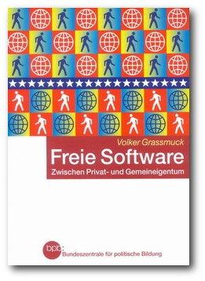
Das 400-seitige Buch ist als kostenloses PDF oder gebunden erhältlich.
© bpb (Creative Commons Attribution-ShareAlike 2.0 License)
Im zweiten Teil seines Buches lässt Grassmuck die letzten 40 Jahre Revue passieren und beschreibt eine gegenläufige Bewegung. Freies Wissen im Sektor der Softwareentwicklung ist das Stichwort. Volker Grassmuck zeigt, wie mit der Entwicklung des Internets - wenn auch ursprünglich in militärischer Absicht, aber bereits dort - eine Phase der Wissens- und Technikerzeugung beginnt, die auf Offenheit setzt. Von der Idee der ,,Requests for Comments'' (RFCs) (Link) bis zur Entwicklung des TCP/IP (Link), setzt eine Entwicklung ein, die darauf zielt, möglichst wenig Rechner vom Netz auszuschließen. Man erreicht dies, indem man eine breite Schicht von potentiellen Nutzern schon frühzeitig in die Entwicklung der Standards miteinbezieht, sodass sich später die brauchbarste Lösung durchsetzen kann. Grassmuck berichtet weiter über die Anfänge der Softwareentwicklung am Beispiel des AI-Lab am MIT (Link) Anfang der 70er Jahre. Der Autor schildert die dort vorherrschende liberale Atmosphäre des freien Austausches von Quellcode und dessen spätere Einschränkung zum Ende der 70er, als die Magie des ,,sharing spririt'' langsam zum Industriegeheimnis durch Binärformate, Geheimhaltungsverträge und Copyright etc. verkümmert (Link). Damit zeigt Grassmuck auch die Geburt des GNU-Projektes (Link) aus der Frustration Richard Stallmans (Link), der zu jener Zeit am MIT arbeitet und sich nicht mit diesen Einschränkungen abfindet. Wenn nun, Grassmucks Worten folgend, Urheber- und Verwertungsrechte das Spannungsfeld zwischen Wissen als Ware und Wissen als öffentlichem Gut markieren, so gewinnt mit Stallmans GPL die Idee eines rechtlich geschützten und gemeinschaftlich nutzbaren, freien Wissens wieder an Überzeugungskraft. Innerhalb Grassmucks Analogie bleibend, könnte man sagen: Die ,,Allmendianer'' sind zurück. Über diese Phase hinaus gibt Grassmuck Einblick in erfolgreiche Open-Source- und Freie-Software-Projekte: von Apache (Link) über GNU/Linux (Link) bis Xfree86 (Link), zeigt deren Organisationsformen, schildert wie diese und andere freie Softwareprojekte funktionieren. Schließlich berichtet Grassmuck sehr detailliert über verschiedene Varianten freier Softwarelizenzen.
Das GNU-Maskottchen auf einer Briefmarke.
© Etienne Suvasa, Peter Garwinski,
Tomasz W. Kozłowski (GPL)
Fazit
Grassmuck liefert mit seinem Buch auf über 400 Seiten eine sehr faktenreiche Darstellung zum Thema Wissen, Freie Software und Gesellschaft. Bemerkenswert daran: Indem er das Urheberrecht stets innerhalb seines gesellschaftshistorisch technischen Zusammenhangs darstellt, macht Grassmuck die zeittypischen Probleme des Urheberrechts sehr deutlich. Trotzdem ist Vorsicht geboten. Man muss wissen, dass Volker Grassmuck sein Buch, wie er selbst schreibt, ,,modular'' aufgebaut hat, heißt: Man kann in der Mitte, ganz hinten oder vorne anfangen zu lesen. Empfehlenswert für den kapitelweisen Zugriff - weniger empfehlenswert, um es in einem Rutsch von vorne nach hinten durchzulesen, da es an einigen Stellen aufgrund der Faktenfülle zu Wiederholungen kommt, in denen auch der rote Faden verloren zu gehen droht. Das Buch ist 2004 bei der Bundeszentrale für politische Bildung (BpB, Bonn) erschienen und lässt sich auf folgender Webseite (Link) entweder gegen einen Betrag von 2 Euro bestellen oder direkt als PDF herunterladen. Links
http://de.wikipedia.org/wiki/Allmende
http://de.wikipedia.org/wiki/Johannes_Gutenberg
http://i31www.ira.uka.de/docs/mm+ep/11_RECHT/node5.html
http://de.wikipedia.org/wiki/Request_for_Comments
http://de.wikipedia.org/wiki/TCP/IP
http://de.wikipedia.org/wiki/Massachusetts_Institute_of_Technology
http://www.oreilly.com/openbook/freedom/ch01.html
http://de.wikipedia.org/wiki/GNU-Projekt
http://de.wikipedia.org/wiki/Richard_Stallman
http://de.wikipedia.org/wiki/Apache_HTTP_Server
http://www.gnu.org/gnu/linux-and-gnu.de.html
http://de.wikipedia.org/wiki/XFree86
http://freie-software.bpb.de/
Zum Index
2008 ist das Jahr des Linux-Desktops von Christian Soeder
Der Titel mag ironisch erscheinen, wird doch schon seit mindestens 2000 propagiert, dass das jeweilige Folgejahr das ,,Jahr des Linux-Desktops'' sei beziehungsweise dass Linux endlich im Massenmarkt ankommen würde. Unnötig zu erwähnen, dass alle diese Vorhersagen bisher falsch lagen. Doch dieses Mal ist vieles anders: GNU/Linux-Distributoren wie Red Hat und Novell machen Gewinn (Link) (Link); diverse große und angesehene Unternehmen wie beispielsweise die New Yorker Börse wechseln zu Linux-Servern (Link); Google fördert stetig die Entwicklung von FLOSS im Rahmen des ,,Google Summer of Code'' (Link) (siehe Nachricht dort (Link)). Die verschiedensten Technikgeräte sind Linux-basiert: es gibt Handhelds, Internet Tablets und Navigationsgeräte auf Linux-Basis, irgendwann im Laufe dieses Jahres soll auch das erste komplett freie Handy mit Linux-Basis erscheinen (Link) (siehe Nachricht dort (Link)). Die OLPC-Initiative hat eine wahre Lawine von Mini-Notebooks mit GNU/Linux-Distributionen ausgelöst - momentaner Höhepunkt: der Deutschlandstart des EeePC von Asus (Link). Auch die Tatsache, dass sich immer mehr Firmen darum kümmern Linux-Treiber zur Verfügung zu stellen, zeigt, dass Linux nicht mehr nur in dunklen Hinterzimmern vertreten, sondern im ,,Mainstream'' angekommen ist. Hier ist als Paradebeispiel die Initiative von AMD zu nennen, zukünftig freie Treiber für ATI-Grafikkarten zu entwickeln (Link) (siehe Nachricht dort (Link)). Zu all diesen Faktoren kommen zwei weitere gewichtige dazu: Windows Vista, das neue Flaggschiff Microsofts, ist ein Flop (Link). Die Treiberprobleme und Imkompatibilitäten sind höher als beim Wechsel von Windows 9.x zu Windows NT, die Mehrheit der Nutzer hat kein Interesse den Rechner aufzurüsten, nur damit das Betriebssystem flüssig läuft. Und zu guter Letzt ist hier auch Ubuntu zu nennen: die GNU/Linux-Distribution, gesponsert von Mark Shuttleworth, Milliardär aus Afrika, hat es geschafft, neue Nutzer zum Wechsel zu Ubuntu zu bewegen (Link). Ubuntu mag nicht die schnellste Distribution sein, aber sie ist eine der anfängerfreundlichsten - und das Marketing ist hervorragend. Die Philosophie hinter Ubuntu, ein ,,Linux für Menschen'' zu machen, kommt einfach gut an. Alle diese Faktoren beweisen, dass FLOSS im Allgemeinen und Linux im Besonderen auf einem guten Weg sind: es ist gar nicht nötig, dass GNU/Linux-Systeme plötzlich massenhaft Windows ersetzen - der Prozess ist unaufhaltsam. Gleichzeitig heißt dies jedoch nicht, dass Microsoft plötzlich keine ernstzunehmende Gefahr mehr darstellt: eine Riesenfirma wie Microsoft verschwindet nicht so plötzlich vom Markt. Microsoft wird weiter versuchen, die eigenen ,,Standards'' zu etablieren und somit Anwender wirklicher Wahlfreiheit zu berauben. 2008 ist das Jahr des Linux-Desktops - aber es kommt anders daher, als zu erwarten war.
Tux, das Linux-Maskottchen.
© Larry Ewing, Simon Budig, Anja Gerwinski
{kind=link}
Links
http://www.pro-linux.de/news/2007/11774.html
http://www.pro-linux.de/news/2007/12103.html
http://www.computerwoche.de/knowledge_center/linux/1850812/
http://code.google.com/soc/
http://de.wikipedia.org/wiki/OpenMoko
http://eeepc.asus.com/de/news02052008.htm
http://www.pro-linux.de/news/2007/11718.html
http://www.welt.de/webwelt/article1047382/Acer_haelt_Windows_Vista_fuer_einen_Flop.html
http://www.golem.de/0802/57662.html
Zum Index
Veranstaltungskalender
Jeden Monat gibt es zahlreiche Messen in Deutschland und viele davon sogar in Ihrer Umgebung. Mit diesem Kalender verpassen Sie davon keine mehr.
| Messen | ||||
| Veranstaltung | Ort | Datum | Eintritt | Link |
| CeBIT - Linux Park | Hannover | 04.03.-09.03.08 | 38,- EUR | http://www.cebit.de/linuxpark_d |
| OpenExpo Bern | Bern (Schweiz) | 12.03.-13.03.08 | frei | http://www.openexpo.ch/openexpo-2008-bern |
| Linux-Infotag | Augsburg | 29.03.08 | frei | http://www.luga.de |
| FOSSGIS | Freiburg | 01.04-03.04.08 | frei | http://www.fossgis.de |
| Linuxtag | Krems (Österreich) | 15.04.08 | frei | http://lug.krems.cc/linuxtag2008/ |
| Linuxtage | Graz (Österreich) | 19.04.08 | frei | http://www.linuxtage.at/ |
| Linux-Workshop | Wolfsburg | 01.05.08 | frei | http://www.lug.wolfsburg.de |
| LUG Camp | Flensburg | 01.05.-04.05.08 | - | http://www.lug-camp-2008.de |
| LinuxTag | Berlin | 28.05.-31.05.08 | - | http://www.linuxtag.org |
| Linuxwochen | Eisenstadt (Österreich) | 30.05.-31.05.08 | frei | http://eisenstadt.linuxwochen.at/ |
| Linuxwochen | Linz (Österreich) | 27.06.-29.06.08 | frei | http://www.linuxwochen.at |
Konventionen
An einigen Stellen benutzen wir Sonderzeichen mit einer bestimmten Bedeutung. Diese sind hier zusammengefasst:
| $: | Shell-Prompt |
| #: | Prompt einer Root-Shell - Ubuntu-Nutzer können hier auch einfach in einer normalen Shell ein ,,sudo'' vor die Befehle setzen. |
| : | Kennzeichnet einen aus satztechnischen Gründen eingefügten Zeilenumbruch, der nicht eingegeben werden soll. |
| ~: | Abkürzung für das eigene Benutzerverzeichnis /home/BENUTZERNAME |
Vorschau
freiesMagazin erscheint immer am ersten Sonntag eines Monats. Die April-Ausgabe wird voraussichtlich am 6. April unter anderem mit folgenden Themen veröffentlicht:
- Firefox-Erweiterungen sichern mit CLEO
- Rezension: XHTML, HTML und CSS
Zum Index
| Impressum | |
| freiesMagazin erscheint als PDF und HTML einmal monatlich. | |
| Redaktionsschluss für die April-Ausgabe: 26. März 2008 | |
| Redaktion | |
| Eva Drud ViSdP | |
| Dominik Wagenführ | |
| Satz und Layout | |
| Eva Drud | |
| Kontakt | |
| Postanschrift | freiesMagazin |
| c/o Eva Drud | |
| Rübenkamp 88 | |
| 22307 Hamburg | |
| Webpräsenz | http://www.freiesmagazin.de |
| Logo-Design | |
| Arne Weinberg | |
| Lizenz | GNU FDL |
| Erscheinungsdatum: 2. März 2008 | ||
| Autoren dieser Ausgabe | ||
| Adrian Böhmichen | ||
| Eva Drud | ||
| Ronny Fischer | ||
| Jürgen Hamel | ||
| Matthias Kietzke | ||
| Christoph Langner | ||
| Thorsten Schmidt | ||
| Christian Soeder | ||
| Dominik Wagenführ | ||
| Nachrichtenschreiber dieser Ausgabe | ||
| Eva Drud (edr) | ||
| Mathias Menzer (mme) | ||
| Dominik Wagenführ (dwa) | ||
| Korrektorat | ||
| Mathias Menzer | ||
| Thorsten Schmidt | ||
| Dominik Wagenführ | ||
Wenn Sie freiesMagazin ausdrucken möchten, dann denken Sie bitte an die Umwelt und drucken Sie nur im Notfall. Die Bäume werden es Ihnen danken. ;-)
Mit vollem Namen gekennzeichnete Beiträge geben nicht notwendigerweise die Meinung der Redaktion wieder.
Zum Index
File translated from TEX by TTH, version 3.79.
On 2 Mar 2008, 09:35.